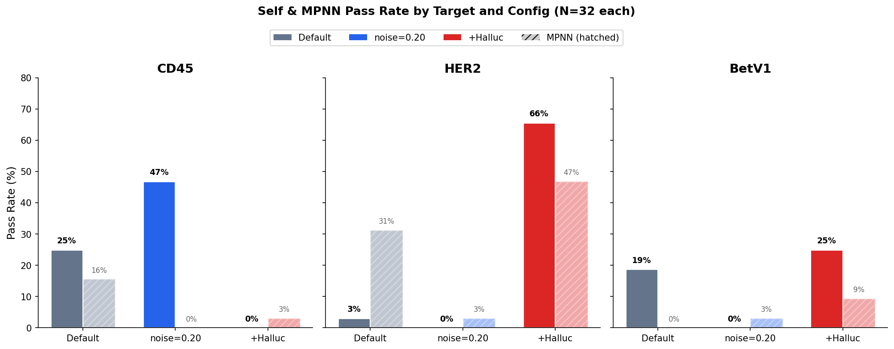
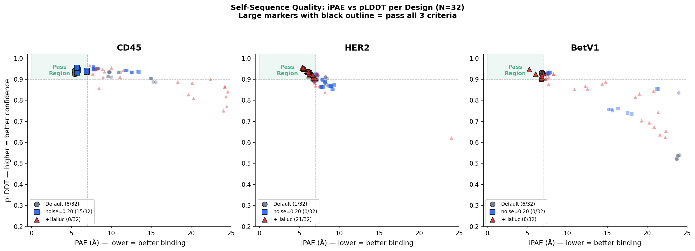
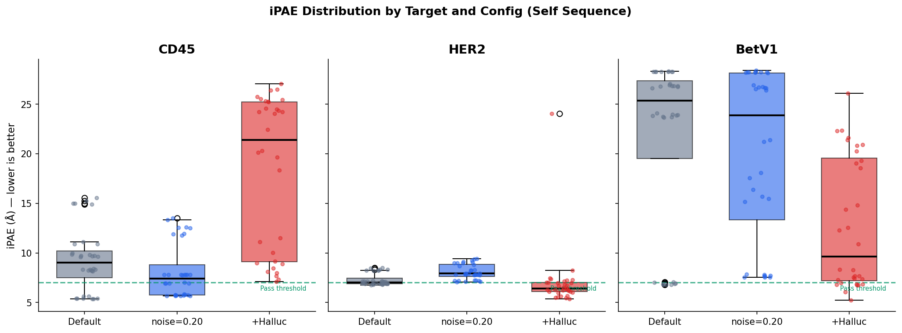
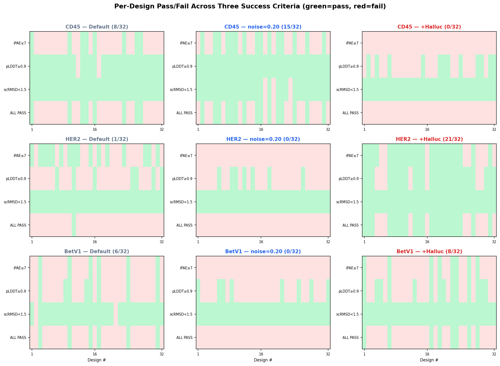
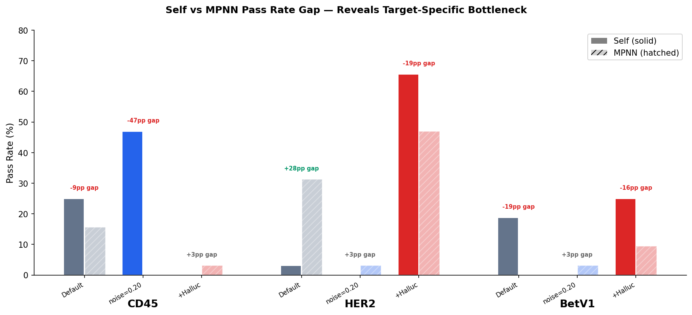
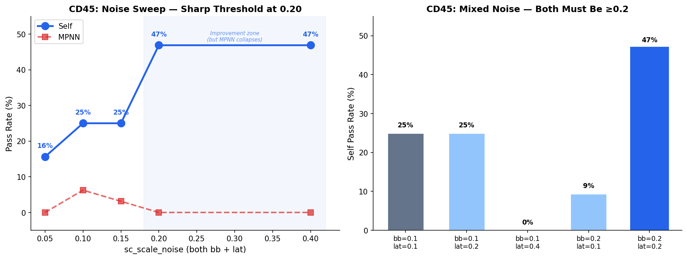
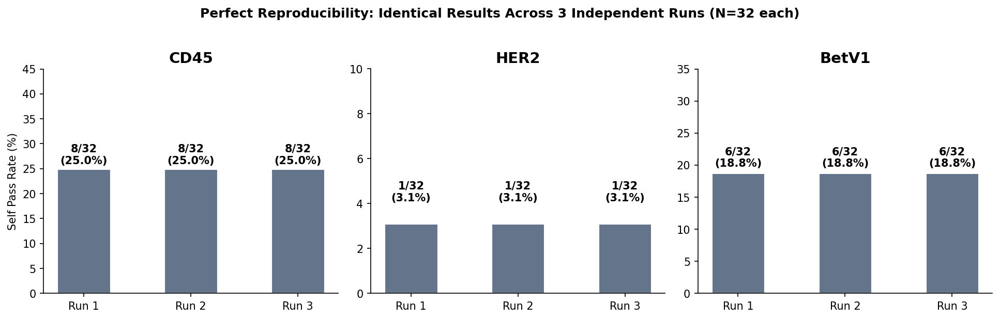
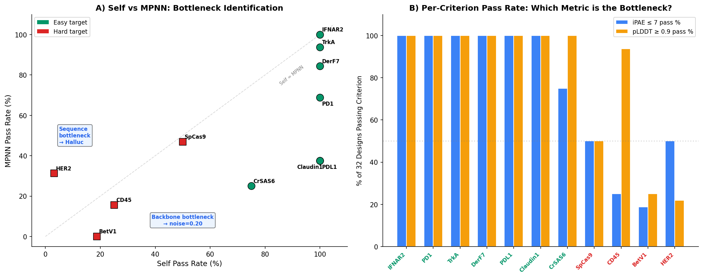
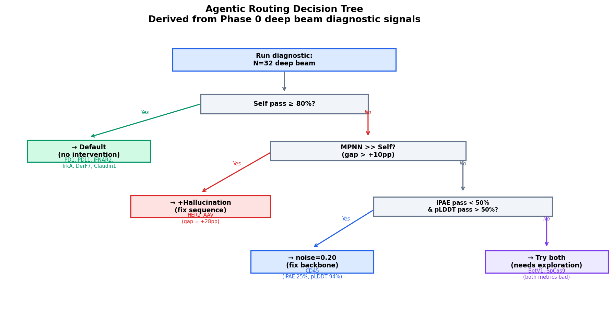
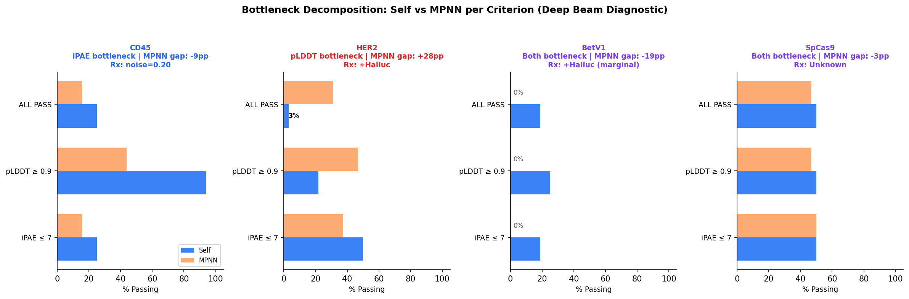

Contents
- The Problem: Inference-Time Scaling
- The Pipeline & Action Space
- Current Results: 11-Target Protein Binder Sweep
- Ligand Binder Results: 7V11/SAM
- Key Findings & Reliability Audit
- Clustered Results Map
- Deep Dive: What Do Noise & Hallucination Actually Do?
- Exp 25/26 Breakthrough: Zero-Hit Frontier Cracked New
- Experiment Tracker
- Research Plan & Architecture
1. The Problem: Inference-Time Scaling
Proteina-Complexa (ICLR 2026 Oral) jointly co-designs protein structure and sequence via flow matching. At inference, test-time optimization (TTO) guides the denoising trajectory using AF2 rewards, steering toward binding-competent designs. The paper tests five inference-time optimization algorithms: Best-of-N, Beam Search, FK Steering, MCTS, and Generate & Hallucinate.
Figure 7: Scaling Analysis from the Paper
Figure 7 plots average unique successes vs. GPU hours for 12 easy and 7 hard targets:
Easy Targets (12)
Best-of-N achieves the most unique successes, outperforming Beam Search. Both continue scaling across the measured range (2.5–12.5 GPU hours). FK Steering ranks third. The model already produces good binders for these targets; more independent samples help most.
Hard Targets (7)
Beam Search achieves the most unique successes and maintains a roughly linear scaling slope. Best-of-N grows sub-linearly, with the gap widening at higher compute budgets. FK Steering ranks second. MCTS performs comparably to Best-of-N. Generate & Hallucinate is worst.
Goal: Build a system where inference-time scaling doesn't plateau on hard targets — analogous to how o1/o3 achieve better results with more test-time compute in LLMs. The agent reads structured intermediate signals and adaptively allocates compute across the full action space, rather than using a fixed strategy for all targets.
What the paper leaves open: The ICLR paper tests each algorithm with fixed default parameters. The companion validation paper (Latent Generative Search) tests 4 sampling noise combinations in aggregate across 75 solvable targets (Table 2, Sec B.4) and uses multi-objective rewards (iPAE, H-bonds, RF3, geometric constraints) for the 127-target campaign. However, neither paper explores per-target parameter tuning, systematic per-difficulty noise analysis, or adaptive multi-round strategies. Our project maps this larger action space with per-target pass rate analysis.
2. The Pipeline & Action Space
How the Pipeline Works
Proteina-Complexa generates proteins through a 4-stage pipeline.
The model jointly co-designs backbone structure (bb_ca) and residue-level sequence
(local_latents) via coupled flow matching. No external inverse folding is needed
for the "self" sequence — it is decoded from the latent space.
"self" = sequence decoded from the model's local_latents (co-designed with structure). "mpnn" = ProteinMPNN redesigns the same backbone from scratch (post-hoc, independent of the model). Both are refolded with AF2 to check designability.
Full Action Space (What an Agent Can Control)
We audited the Proteina-Complexa codebase and identified 5 search algorithms, 4 reward models, and 30+ tunable parameters. The "Explored?" column reflects our experiments — the paper tested all 5 algorithms with default parameters in Figure 7.
| Category | Parameter | Default | Options / Range | Explored? |
|---|---|---|---|---|
| Search Algorithm (paper tested all 5 with defaults) | ||||
| Algorithm | algorithm | best-of-n | single-pass, beam-search, fk-steering, mcts, best-of-n |
Partial |
| Beam Search | beam_width | 4 | 1 – 32 | Yes (2, 8, 16) |
| Beam Search | n_branch | 4 | 1 – 16 | Yes (3, 4, 8) |
| Beam Search | step_checkpoints | every K=100 steps | Any subset of 0–400 | Yes (3 schedules) |
| FK Steering | temperature (inv. temp β) | β=10 | 0.01 – 100.0 | Yes (Exp 1) — beam dominates |
| MCTS | n_simulations, exploration_constant, ε | 20, 1.0, 0.5 | 5–100, 0.1–5.0, 0–1 | Default only |
| Denoising / Diversity | ||||
| Sampling noise | sc_scale_noise (backbone & sequence) | 0.1 | 0.0 – 1.0 | Yes (Exp 2) — companion paper: 4 combos aggregate (Table 2); we: per-target pass rate analysis |
| Steps | nsteps | 400 | 100 – 1000 | No |
| Guidance | guidance_w | 1.0 | 0.0 – 5.0 | Blocked (Exp 7) — requires fold_cond, N/A for binders |
| Samples | nsamples | 4 | 1 – 200 | Yes |
| Reward Models (During TTO) | ||||
| AF2 Multimer | i_pae weight | -1.0 | Any float | Yes |
| AF2 Multimer | plddt, i_ptm, con, etc. | 0.0 | 17 available metrics | Partial (Exp 3) — moderate weights safe; aggressive weights fatal |
| RF3 | min_ipAE, ranking_score, etc. | not used | 14 available metrics | No |
| TMOL | H-bond count, electrostatic energy | not used | Fast | No |
| Bioinformatics | Shape complementarity, dSASA, hydrophobicity | not used | Fast | No |
| Post-Generation | ||||
| Refinement | sequence_hallucination | off | AF2-guided seq optimization (logit opt + greedy mutation) | Yes (Exp 4) — paper G&H uses mutation only (stage 4); universally worst in Fig 7; we: selective application is transformative |
| Evaluation | sequence_types | [self] | self, mpnn, mpnn_fixed |
Yes |
| Target Specification | ||||
| Target | hotspot_residues | from config | Any subset of target residues | No |
| Target | binder_length | [64, 155] | [min, max] range | No |
"Default only" = the paper tested this algorithm but only with its default parameters. "No" = neither the paper nor our experiments have explored this parameter. Key distinction: The companion paper (Latent Generative Search, Table 2, Sec B.4) tested 4 sampling noise combinations (bb×lat: 0.1×0.1, 0.1×0.4, 0.4×0.1, 0.4×0.4) in aggregate across 75 solvable targets from the 127-target panel. Result: (0.1, 0.4) solves the most targets (36 vs 33); each setting uniquely solves 2–4 targets. Our analysis goes deeper: per-target pass rates reveal that hard targets benefit from higher backbone noise but easy targets are hurt, and that the self-pass vs. MPNN-pass divergence is a critical signal not visible in aggregate counts. The ICLR paper itself uses fixed noise ηx=ηz=0.1 throughout.
FK Steering: A Continuous Explore-Exploit Spectrum
FK Steering is identical to Beam Search except at the selection step: instead of hard top-k,
it samples with P(beam) ~ exp(reward / temperature).
- T → 0: Converges to Beam Search (greedy exploitation)
- T → ∞: Converges to Best-of-N (pure exploration)
- Intermediate T: Soft exploration-exploitation tradeoff
In Figure 7, FK Steering with default T=0.1 already ranks 2nd on hard targets (above Best-of-N) and 3rd on easy targets. The key question is whether tuning T per target can close the gap with Beam Search on hard targets while matching Best-of-N on easy targets.
3. Current Results: 11-Target Protein Binder Sweep
33 SLURM jobs across 11 protein targets and 3 configurations. We selected 11 of the paper’s 19 main protein targets: 7 easy (PD1, PDL1, IFNAR2, TrkA, DerF7, CrSAS6, Claudin1) and 4 hard (CD45, HER2_AAV, BetV1, SpCas9). The remaining 8 targets (BHRF1, BBF14, DerF21, Insulin, IL7RA, VEGFA, SC2RBD, CbAgo) were not included in our Phase 0 sweep; they were added later through the Phase 2 diagnosis expansion and hard-target follow-up batches. All beam search configs use AF2 multimer iPAE as the sole reward signal during TTO. A parallel Autoresearch sweep (collaboration with Jinyeop Song) additionally tested 5 beam search configs across 10 targets (50 experiments, all complete).
In the summary tables immediately below, the color-coded difficulty tags are local empirical bins for this 11-target sweep. When the page refers to the paper’s official target classes, it says so explicitly as paper classification or paper difficulty.
Configurations
| Config | Algorithm | nsamples | beam_width | n_branch | Checkpoints | Finals/Run |
|---|---|---|---|---|---|---|
| notto | single-pass (no TTO) | 200 | -- | -- | -- | 200 |
| wide | beam-search | 2 | 16 | 4 | [0,100,250,400] | 32 |
| deep | beam-search | 4 | 8 | 3 | [0,65,130,200,270,340,400] | ~12-14 |
notto = 200 independent random trajectories with no reward guidance. wide = large beam_width (16) with fewer, widely-spaced checkpoints (3 pruning steps). deep = smaller beam_width (8) with more frequent checkpoints (6 pruning steps). All beam-search configs in the Phase 0 sweep contribute 32 evaluated final samples per run; only notto uses ~200 independent samples (194 for BetV1, 199 for TrkA, 200 otherwise).
Generation-Stage AF2 iPAE (Lower = Better Binding)
iPAE = interface Predicted Aligned Error from AF2 multimer, normalized to 0–1 (multiply by 31 for raw score). Success threshold: iPAE*31 ≤ 7.0, i.e., iPAE ≤ 0.226. "Mean" = average across all samples; "Best" = minimum iPAE (best single sample). Green = best config per target on that metric.
| Target | Difficulty | notto (N=200) | deep | wide | |||
|---|---|---|---|---|---|---|---|
| Mean | Best | Mean | Best | Mean | Best | ||
| TrkA | Easy | 0.519 | 0.134 | 0.145 | 0.136 | 0.147 | 0.126 |
| IFNAR2 | Easy | 0.469 | 0.145 | 0.153 | 0.148 | 0.152 | 0.142 |
| PD1 | Easy | 0.569 | 0.158 | 0.158 | 0.135 | 0.168 | 0.149 |
| PDL1 | Easy | 0.504 | 0.177 | 0.188 | 0.173 | 0.183 | 0.166 |
| CrSAS6 | Easy | 0.748 | 0.183 | 0.201 | 0.159 | 0.185 | 0.170 |
| DerF7 | Medium | 0.539 | 0.204 | 0.199 | 0.184 | 0.198 | 0.178 |
| SpCas9 | Medium | 0.718 | 0.195 | 0.230 | 0.171 | 0.222 | 0.184 |
| Claudin1 | Medium | 0.630 | 0.212 | 0.211 | 0.196 | 0.230 | 0.206 |
| CD45 | Hard | 0.813 | 0.261 | 0.299 | 0.173 | 0.430 | 0.194 |
| HER2_AAV | Hard | 0.810 | 0.246 | 0.237 | 0.219 | 0.314 | 0.256 |
| BetV1 | Hard | 0.842 | 0.285 | 0.614 | 0.220 | 0.888 (n=2) | 0.864 |
Difficulty labels are based on our evaluation pass rates (see below). The ICLR paper (Sec E) classifies: Easy (12): IFNAR2, BHRF1, BBF14, DerF21, TrkA, PD1, Insulin, DerF7, PDL1, IL7RA, CrSAS6, Claudin1. Hard (7): VEGFA, SpCas9, SC2RBD, CbAgo, CD45, BetV1, HER2-AAV. Very Hard (3, excluded from main): H1, TNF-α, IL17A. BetV1-wide produced only 2 samples due to timeout during beam search. TrkA notto: 199 samples. BetV1 notto: 194 samples. All others: 200 samples.
Evaluation Pass Rates (After AF2 Refolding + ProteinMPNN Redesign)
Success = iPAE*31 ≤ 7.0 AND pLDDT ≥ 0.9 AND scRMSD < 1.5A.
self = model's co-designed sequence.
mpnn = ProteinMPNN redesign of same backbone.
Pass rate = fraction of samples meeting all three criteria simultaneously.
Denominators: notto uses 194–200 samples; deep uses 32; wide uses 32
(except BetV1-wide, which produced only 2 evaluated samples due to timeout during beam search).
All 33 jobs fully evaluated.
| Target | Difficulty | notto | deep | wide | |||
|---|---|---|---|---|---|---|---|
| Self | MPNN | Self | MPNN | Self | MPNN | ||
| TrkA | Easy | 7.5% | 18.0% | 100% | 93.8% | 100% | 90.6% |
| IFNAR2 | Easy | 24.0% | 38.0% | 100% | 100% | 100% | 96.9% |
| PD1 | Easy | 8.5% | 17.5% | 100% | 68.8% | 100% | 87.5% |
| PDL1 | Easy | 7.5% | 10.0% | 100% | 37.5% | 100% | 81.3% |
| CrSAS6 | Easy | 4.0% | 4.5% | 75.0% | 25.0% | 100% | 62.5% |
| DerF7 | Medium | 4.0% | 12.0% | 100% | 84.4% | 100% | 100% |
| SpCas9 | Medium | 2.5% | 1.5% | 50.0% | 46.9% | 37.5% | 21.9% |
| Claudin1 | Medium | 0.5% | 1.5% | 100% | 37.5% | 21.9% | 31.3% |
| CD45 | Hard | 0% | 0% | 25.0% | 15.6% | 9.4% | 0% |
| HER2_AAV | Hard | 0% | 0% | 3.1% | 31.3% | 0% | 0% |
| BetV1 | Hard | 0% | 0% | 18.8% | 0% | 0% | 0% |
HER2_AAV-deep shows an anomaly: mpnn pass rate (31.3%) greatly exceeds self pass rate (3.1%). This means ProteinMPNN redesigns succeed on backbones where the model's own sequence fails — suggesting the model generates good structures but suboptimal sequences for this target.
What the Three Success Metrics Mean
A design is considered successful only if all three criteria are met simultaneously:
| Metric | Threshold | What It Measures | What Failure Means |
|---|---|---|---|
| iPAE ≤ 7Å | i_pAE * 31 ≤ 7 | Interface binding quality. AF2 Multimer’s inter-chain Predicted Aligned Error measures how confidently AF2 predicts the relative position of the binder and target. Lower = AF2 believes the binder binds at the correct interface. | AF2 is not confident the binder engages the target interface. The binder may not dock correctly, may bind the wrong site, or may not interact at all. This is the primary bottleneck for CD45 and BetV1. |
| pLDDT ≥ 0.9 | complex_pLDDT ≥ 0.9 | Structural confidence of the complex. AF2’s per-residue confidence score averaged over the complex. Higher = AF2 is confident the predicted fold is correct. Reflects whether the amino acid sequence folds into a well-defined 3D structure. | The co-designed sequence does not fold confidently — it may be disordered, partially unfolded, or adopt an incorrect fold. This is the primary bottleneck for HER2_AAV (hallucination fixes this because it rewrites the sequence). |
| scRMSD < 1.5Å | binder_scRMSD_ca < 1.5 | Self-consistency. The RMSD between the designed backbone and the AF2-predicted backbone when AF2 refolds the sequence from scratch. Lower = the backbone is designable and the sequence faithfully reproduces the intended structure. | The sequence does not fold back into the designed backbone. The structure is “hallucinated” by the model but not physically realizable. Rarely the bottleneck in our experiments (most designs pass this easily). |
Per-Target Bottleneck Analysis (Deep Beam, Self Sequence)
For each target, we decompose why designs pass or fail by checking each criterion independently. This reveals whether the bottleneck is binding quality (iPAE), fold confidence (pLDDT), or structural consistency (scRMSD). The Self/MPNN gap reveals whether the problem is the co-designed sequence (fixable by hallucination) or the backbone itself (fixable by noise). Unless noted otherwise, every percentage in this table is out of N=32 deep-beam designs for that target.
| Target | Difficulty | iPAE pass% | pLDDT pass% | scRMSD pass% | Self% | MPNN% | Gap | Bottleneck | Predicted Intervention |
|---|---|---|---|---|---|---|---|---|---|
| IFNAR2 | Easy | 100% | 100% | 100% | 100% | 100% | 0pp | None | Default (no intervention needed) |
| PD1 | Easy | 100% | 100% | 100% | 100% | 69% | -31pp | None | Default |
| TrkA | Easy | 100% | 100% | 100% | 100% | 94% | -6pp | None | Default |
| DerF7 | Easy | 100% | 100% | 100% | 100% | 84% | -16pp | None | Default |
| PDL1 | Easy | 100% | 100% | 100% | 100% | 38% | -63pp | None | Default |
| Claudin1 | Easy | 100% | 100% | 100% | 100% | 38% | -63pp | None | Default |
| CrSAS6 | Easy | 75% | 100% | 100% | 75% | 25% | -50pp | iPAE (mild) | Default or noise (to test) |
| SpCas9 | Hard | 50% | 50% | 100% | 50% | 47% | -3pp | Both iPAE + pLDDT | Try noise and halluc |
| CD45 | Hard | 25% | 94% | 100% | 25% | 16% | -9pp | iPAE (backbone geometry) | noise=0.20 ✓ |
| BetV1 | Hard | 19% | 25% | 94% | 19% | 0% | -19pp | Both iPAE + pLDDT | Try both (halluc marginal ✓) |
| HER2_AAV | Hard | 50% | 22% | 100% | 3% | 31% | +28pp | pLDDT + Sequence (MPNN>>Self) | +Hallucination ✓ |
How to Read This Table
- iPAE pass%: What fraction of 32 designs have iPAE*31 ≤ 7.0 (regardless of other criteria). If low, the backbone does not create a good binding interface → need more structural diversity (noise).
- pLDDT pass%: What fraction have pLDDT ≥ 0.9. If low, the co-designed sequence does not fold confidently → the sequence is the problem, not the backbone → hallucination can fix this.
- Self/MPNN gap: If MPNN >> Self (positive gap), the backbone is good but the co-designed sequence is bad → hallucination. If Self ≥ MPNN (negative gap), the co-designed sequence is at least as good as MPNN → backbone is the bottleneck.
- CD45 example: 94% pass pLDDT but only 25% pass iPAE. The sequences fold fine but don’t bind → backbone geometry is wrong → noise=0.20 explores more backbone topologies and doubles the pass rate.
- HER2 example: Only 22% pass pLDDT but 50% pass iPAE, and MPNN gets 31% while Self gets 3%. The backbone IS good (MPNN proves it), but the model’s own sequences don’t fold → hallucination rewrites sequences using AF2 → 66% pass rate.
Prior Autoresearch Sweep: 5 Configs x 10 Targets
A parallel sweep (collaboration with Jinyeop Song) tested 5 beam search configurations across 10 protein targets (50 experiments, all complete, 26,560 total samples). E_fine_selector (= our "deep" config) won 7/10 targets by best sample iPAE.
| Config | Strategy | nsamples | beam_width | n_branch | Checkpoints | Wins (best iPAE) |
|---|---|---|---|---|---|---|
| E_fine_selector | Frequent pruning | 4 | 8 | 3 | [0,65,130,200,270,340,400] | 7/10 |
| D_early_brancher | Wide early branch | 4 | 8 | 8 | [0,200,400] | 2/10 |
| C_deep_exploiter | Deep per-length | 2 | 16 | 4 | [0,100,250,400] | 1/10 |
| A_balanced | Paper default | 4 | 8 | 4 | [0,100,200,300,400] | 0/10 |
| B_length_explorer | Max length diversity | 16 | 2 | 4 | [0,100,200,300,400] | 0/10 |
Config sensitivity varies dramatically: CV of iPAE across configs ranges from 0.027 (IFNAR2 — config doesn't matter) to 0.648 (BetV1 — config choice is critical). For 4/10 proteins, the optimal config changes when optimizing for top-16 pool vs. top-1 sample.
4. Ligand Binder Results: 7V11/SAM
4 TTO configs + 3 no-TTO baselines for the SAM ligand target (7V11). Scored by RoseTTAFold3 (not AF2). iPTM and ranking_score are higher=better.
| Config | n | Mean iPAE | Best iPAE | Mean iPTM | Best iPTM | Best Ranking |
|---|---|---|---|---|---|---|
| E_fine_grained (TTO) | 19 | 0.159 | 0.108 | 0.888 | 0.927 | 0.927 |
| G_more_starts (TTO) | 31 | 0.193 | 0.121 | 0.858 | 0.923 | 0.923 |
| C_deep_exploit (TTO) | 32 | 0.200 | 0.135 | 0.848 | 0.912 | 0.917 |
| F_late_only (TTO) | 32 | 0.205 | 0.143 | 0.837 | 0.909 | 0.909 |
| notto (N=544) | 544 | 0.307 | 0.145 | 0.685 | 0.911 | 0.908 |
| notto (N=200) | 200 | 0.305 | 0.158 | 0.689 | 0.911 | 0.917 |
| notto (N=32) | 32 | 0.324 | 0.156 | 0.652 | 0.884 | 0.892 |
Config E (beam search with fine-grained pruning) achieves mean iPAE 0.159 with only 19 samples, beating notto's mean of 0.307 with 544 samples. Importantly, notto's best iPAE with N=544 (0.145) still cannot match Config E's mean (0.159), showing TTO doesn't just improve the mean — it shifts the entire distribution.
5. Key Findings
1. No universal winner across targets
Wide beam wins on PD1, PDL1, TrkA, CrSAS6, DerF7. Deep beam wins on Claudin1, SpCas9, CD45, HER2_AAV, BetV1. The Autoresearch sweep confirms: the optimal config changes for 4/10 proteins when switching from top-1 to top-16 selection. This target-dependence is the core motivation for adaptive routing.
2. Beam search dramatically outperforms random sampling
With all evaluation pass rates complete: IFNAR2 jumps from 24% (notto) to 100% (deep); PD1 from 8.5% to 100%; Claudin1 from 0.5% to 100%; CrSAS6 from 4% to 100%. Even CD45 (hard) goes from 0% to 25%. All 3 hard targets (CD45, HER2_AAV, BetV1) score 0% with notto but achieve non-zero pass rates with beam search. Mean iPAE drops 3-5x across all targets.
3. Co-designed sequences match or outperform ProteinMPNN in 10/11 targets
Considering the best config per target, self pass rate ≥ mpnn pass rate in 10 of 11 targets. The exception is HER2_AAV-deep (self 3.1% vs mpnn 31.3%), where the model generates good backbones but suboptimal sequences. This anomaly suggests HER2_AAV may benefit from targeted sequence refinement.
4. Hard targets remain unsolved
BetV1: 18.8% self pass rate (deep), 0% mpnn. HER2_AAV: 3.1% self (deep). CD45: 25% self (deep). BetV1-wide produced only 2 samples (timeout). These targets likely need qualitatively different strategies: different reward signals, longer binders, different hotspot selections, or stronger exploration mechanisms.
5. Large portions of the action space remain unexplored
The ICLR paper tested all 5 algorithms with fixed default parameters (η=0.1, N=4, L=4, K=100). The companion paper (Latent Generative Search) tested 4 sampling noise combinations in aggregate across 75 solvable targets and used multi-objective rewards for its 127-target campaign. However, the per-target breakdown of what noise level helps hard targets specifically vs. easy ones, systematic parameter tuning within algorithms (e.g., FK Steering temperature, MCTS exploration constant), and adaptive multi-round routing — none of these have been explored. Our project maps this space with per-target analysis and builds an adaptive routing agent on top of it.
KEY INSIGHT: No Single Config Works — Interventions Are Target-Dependent and Non-Additive
The core finding motivating an agentic approach:
| Target | Difficulty | Default | noise=0.20 | +Halluc | noise+halluc | Best Config |
|---|---|---|---|---|---|---|
| CD45 | Hard | 25.0% | 46.9% | 0.0% | 18.8% | noise=0.20 |
| PDL1 | Easy | 100% | 75.0% | 81.2% | — | Default |
| HER2_AAV | Hard | 3.1% | 0.0% | 65.6% | 43.8% | Hallucination |
| BetV1 | Hard | 18.8% | 0.0% | 25.0% | 34.4% | Hallucination (marginal) |
- Each target has a different optimal config. CD45 needs noise=0.20. HER2_AAV needs hallucination. PDL1 needs nothing (default is best). BetV1 benefits marginally from hallucination.
- Interventions that help one target destroy another. Hallucination kills CD45 (0%, p=0.005). noise=0.20 kills HER2 and BetV1 (both 0%). But noise+halluc is target-dependent: it hurts CD45 (18.8% vs 46.9% for noise-only) while remaining viable on HER2_AAV (43.8%) and BetV1 (34.4%).
- noise=0.15 doesn’t help (sharp threshold). CD45 at noise=0.15 gives exactly 25% (=default). The jump to 46.9% happens only at 0.20.
- bb+lat noise must change together. bb=0.2,lat=0.1 gives 9.4% (worse than default). You need both bb=0.2 AND lat=0.2 for the 46.9% effect.
- Baseline pass rates are deterministic. 3 independent runs for each target: CD45 always 8/32, HER2 always 1/32, BetV1 always 6/32. Zero run-to-run variance.
- Conclusion: An agentic system that dynamically selects the right config per target will outperform any fixed config. The matrix is now complete — ready to build the router.
6. Reliability Audit — Publication Status (Updated)
Full review in docs/EXPERIMENT_RELIABILITY_REVIEW.md. Phase 1b complete (all 9/9 jobs).
All confirmed with num_redesign_seqs=8. Phase 2a (24 jobs) launched on April 7, 2026 for scale-up and matrix completion;
Phase 2b diagnosis expansion (Exp 16a-i, 9 jobs) was also submitted the same day for BHRF1, SC2RBD, and VEGFA.
| Finding | Evidence | Status |
|---|---|---|
| Exp 1 — FK < Beam Search | Claudin1: 100%→0% monotone collapse. IFNAR2: same. CD45: directional. | Ready |
| Exp 2+5 — backbone noise=0.2 doubles CD45 self pass | N=96: 25%→47%, p=0.003. All 3 runs gave exactly 8/32 vs 15/32. | Ready (N=96 confirmed) |
| Exp 6 — backbone noise drives improvement, not sequence noise | lat=0.2 alone: 0 improvement (p=1.0). lat=0.4 alone: catastrophic (0%, p=0.005). | Ready (new mechanistic finding) |
| Exp 3 — iface_focus kills generation | 0/32 on both targets. Robust negative result. | Ready |
| Exp 4+4b — hallucination rescues HER2_AAV | Paired control: 1/32 (no halluc) vs 21/32 (+halluc), p<10⁻⁶. Causal. | Ready (paired control confirmed) |
| Exp 4 — PDL1 MPNN 37.5%→78.1% | p=0.002. | Ready |
| Exp 4 — PDL1 self 100%→81.2% (drop) | p=0.024. Real decrease — must report. | Ready (must report) |
| Exp 8 — noise=0.2 + hallucination HURTS CD45 | 6/32 (18.8%) vs 15/32 (46.9%) without halluc, p=0.032. Hallucination degrades noise benefit. | Ready (negative result) |
| Exp 9 — hallucination modest for BetV1 | 8/32 (25.0%) vs 6/32 (18.8%) baseline, p=0.76 n.s. MPNN: 0%→9.4%. | Ready |
7. What the Paper Already Covered vs. What We Add
Cross-checked against the ICLR 2026 paper (Figure 7) and its appendices.
| Topic | What the Paper Did | What We Add |
|---|---|---|
| FK Steering temperature | FK Steering with β=10 (inverse temp); no temperature sweep in Figure 7 | Full sweep T=0.01–2.0 → Beam dominates; FK monotonically worse |
| Sampling noise (sc_scale_noise) | Companion paper (Latent Gen. Search, Table 2): 4 noise combos, aggregate across 75 solvable targets. ICLR paper: fixed η=0.1 | Per-target pass rates; found noise 0.2 doubles hard-target self pass but kills MPNN — not visible in aggregates |
| Sequence hallucination | Figure 7: G&H (mutation-only stage 4) tested universally → worst of 5 algorithms. Sec I.3 ablates logit opt stages. | Full halluc (softmax+greedy+mutation), selective application to bb>seq gap targets: HER2_AAV 3%→66% |
| Composite reward signals | ICLR: iPAE for main beam search; iPAE/31+pLDDT for very hard targets (Sec I.4). Companion: multi-objective (iPAE, H-bonds, RF3, geometry) | Tested iPAE+pLDDT+iPTM and iPAE+iPTM+iCon → interface-heavy weights kill generation |
| CFG guidance_w | Not tested (always 1.0 = off) | Attempted → blocked: not applicable to binder mode |
| Hard target analysis | Fig 7 separates easy (12) vs hard (7); Sec I.4 tackles 3 very hard targets (H1, TNF-α, IL17A) with MCTS+G&H+modified reward; Sec I.6 has per-target plots | Systematic isolation: hard targets benefit from higher noise; easy from default; routing signal identified |
| Mixed noise (bb ≠ latent) | Companion paper (Table 2): (0.1, 0.4) solves most targets (36 vs 33 default) | Exp 6: Per-target isolation → backbone noise drives improvement; latent noise alone catastrophic (0%, p=0.005) |
| Adaptive routing agent | Not done — every target gets the same fixed strategy | Core contribution: diagnose difficulty, route to optimal (noise level + hallucination toggle), iterate |
| LoRA finetuning (Exp 10) | Not done | Planned: finetune denoiser on successful binders to shift prior |
| Trajectory recycling (Exp 11) | Paper has “diffuse-denoise” (noise+regenerate finished designs) — different from in-trajectory warm-starting | Planned: warm-start from t=130 intermediate states of successful trajectories |
5a. Clustered Results Map
The raw experiment history is chronological, but the scientific story is easier to read when grouped by question. This map keeps the same content while clustering related experiments together.
| Cluster | Main Experiments | Main Question | Main Takeaway |
|---|---|---|---|
| A. Baselines and diagnostic signal | Phase 0, Phase 0.5, bottleneck analysis, Exp 15-17 | What does a cheap default diagnostic already reveal about a target? | Targets already separate into default-favored, geometry-limited, sequence-limited, and unresolved classes from a single N=32 diagnostic run. |
| B. Intervention mechanism and reliability | Exp 1-13, Exp 4b, Exp 5a/5b, Exp 6, Exp 8, Exp 9 | Why do noise and hallucination help some targets but hurt others? | Noise and hallucination are target-dependent and often non-additive. The mechanism is reproducible and not a one-off artifact. |
| C. Zero-hit frontier and hard-target search | Exp 20, Exp 25-29, Exp 27, paper comparison | What actually unlocks the hardest targets after beam-family search fails? | MCTS + local refinement is the first strong unlock. Reward shaping helps selectively, not universally. |
| D. Agentic routing | Diagnostic extraction, Exp 21, Exp 24, updated taxonomy | What should the controller act on next? | The agent should route over operator bundles and target classes, not over isolated knobs. |
Recommended Reading Order
- Start with Cluster A: Phase 0, the evaluation pass-rate tables, and the per-target bottleneck table define the initial taxonomy.
- Then read Cluster B: the noise / hallucination deep dive explains the mechanism behind the routing rules and why interventions do not transfer cleanly across targets.
- Then read Cluster C: the hard-target section shows what changed once the project moved beyond beam-family search.
- Finish with Cluster D: the updated taxonomy and routing logic show how the experimental findings translate into an agentic controller.
5b. Deep Dive: What Do Noise & Hallucination Actually Do?
Our two most impactful interventions — increased sampling noise and sequence hallucination — operate on fundamentally different parts of the generation pipeline. Understanding why each works for specific targets (and fails for others) is the foundation of our agentic routing logic.
What is sc_scale_noise?
Proteina-Complexa generates proteins by solving a stochastic differential equation (SDE) that transforms Gaussian noise
into structure + sequence over 400 denoising steps. The sc_scale_noise parameter
(η in the paper) controls how much random noise is injected at each step:
delta_x = (velocity + gt * score) * dt + sqrt(2 * gt * sc_scale_noise * dt) * random_noise- η = 0: Pure ODE. Deterministic — same initial noise always produces the same protein.
- η = 0.1 (default): Low-temperature SDE. Tight, consistent structures. The paper’s default for all experiments.
- η = 0.2: Higher stochasticity. More structurally diverse backbones. Our experiments show this doubles CD45 self pass rate (25%→47%) by exploring a wider region of fold space near the binding interface.
Two independent controls: bb_ca.sc_scale_noise (backbone Cα noise) and
local_latents.sc_scale_noise (sequence/sidechain noise) can be set independently.
Our Exp 6 and 12 show that both must be raised together to 0.2 for the effect —
raising only backbone (bb=0.2, lat=0.1) gives 9.4% (worse than default), and raising only
latent (bb=0.1, lat=0.4) gives 0% (catastrophic).
What is Sequence Hallucination?
Sequence hallucination is a post-generation refinement step that optimizes the co-designed sequence using AlphaFold2 as a differentiable oracle. After the flow model produces a binder (structure + sequence), hallucination iteratively modifies the sequence to minimize AF2’s predicted interface error, in three stages:
| Stage | What Happens | Iterations |
|---|---|---|
| Softmax optimization | AF2 refolds the complex while amino acid probabilities are represented as continuous softmax vectors. Temperature anneals from soft to hard, gradually committing to specific residues. Backpropagation through AF2 updates the sequence probabilities. | 45 iters |
| One-hot optimization | Switch to discrete one-hot amino acid representations. AF2 still provides gradients but through a straight-through estimator. | 5 iters |
| Greedy mutation | Try single-residue mutations and keep those that improve AF2 scores (PSSM semigreedy). No gradients — pure forward-pass evaluation. | 15 iters |
Key insight: Hallucination does not change the backbone — it only rewrites the amino acid sequence to better match the fixed 3D structure according to AF2. This is why it works spectacularly for HER2_AAV (where the backbone is already good but the co-designed sequence is poor) and fails for CD45 (where the backbone itself needs improvement).
Note: The ICLR paper’s “Generate & Hallucinate” uses only Stage 3 (greedy mutation), which is fast but limited. Our experiments use all three stages (softmax + one-hot + greedy), which is slower but more powerful for hard targets.
Why Each Intervention Only Helps Specific Targets
| Target | Bottleneck | noise=0.20 Effect | +Halluc Effect | Why |
|---|---|---|---|---|
| CD45 | Backbone diversity too low | 25%→47% | 25%→0% | More noise → more diverse folds → more hit the binding pocket. Halluc can’t fix a bad backbone. |
| HER2_AAV | Sequence quality (backbone is fine) | 3%→0% | 3%→66% | MPNN pass=31% proves backbones are good. Halluc rewrites bad co-designed sequences. Noise destroys the delicate backbone. |
| BetV1 | Both backbone and sequence | 19%→0% | 19%→25% | Modest halluc gain. No clear backbone>sequence gap to exploit. Noise too aggressive. |
| PDL1 | None (easy target) | 100%→75% | 100%→81% | Default is already perfect. Any intervention only adds noise or overwrites good sequences. |
Visual Analysis: The Complete Picture
Figure A: Pass Rate Matrix — Each Target Needs a Different Config
Solid bars = self-sequence pass rate. Hatched bars = MPNN redesign pass rate. N=32 designs per condition. Pass = iPAE*31 ≤ 7.0 AND pLDDT ≥ 0.9 AND scRMSD < 1.5Å.

Figure B: iPAE vs pLDDT per Design — Where Each Config Moves the Distribution
Each point = one of 32 designs. Large points with black outline = pass all 3 criteria. Shaded green region = success zone. Notice how noise shifts CD45 designs toward the pass region, while hallucination shifts HER2 designs there.

Figure C: iPAE Distribution by Config — How Interventions Shift Binding Quality
Box = IQR. Line = median. Points = individual designs. Green dashed line = pass threshold (iPAE ≤ 7Å). For CD45, noise=0.20 pushes the median below the threshold. For HER2, hallucination achieves this.

Figure D: Per-Design Pass/Fail Heatmap — Which Criterion is the Bottleneck?
Green = pass, red = fail for each of 32 designs across 3 criteria. Bottom row (ALL PASS) = all three must be green. For HER2 baseline, most designs pass iPAE but fail pLDDT — hallucination fixes exactly this. For CD45, noise fixes iPAE failures.

Figure E: Self vs MPNN Gap — Diagnostic Signal for the Agent
The gap between self (solid) and MPNN (hatched) reveals the bottleneck type. HER2 baseline: MPNN >> self = “backbone is good, sequence is bad” → use hallucination. CD45 noise=0.20: self >> MPNN = “noise helps self but MPNN can’t redesign these diverse backbones”.

Figure F: Noise Threshold & Mixed Noise Analysis (CD45)
Left: symmetric noise sweep shows a sharp threshold at 0.20 (no improvement at 0.15, sudden jump at 0.20). MPNN collapses to 0% at ≥0.20. Right: both backbone AND latent noise must be raised together; raising only one component is neutral or harmful.

Figure G: Reproducibility — Self Pass Rate is Deterministic
3 independent runs with different random seeds give exactly identical self pass rates for all 3 targets. This means the pipeline’s outcome is dominated by the deterministic beam search structure, not stochastic noise. Changes in pass rate are real signals, not random variance.

Diagnostic Signal Extraction: Can We Predict the Right Intervention?
The core question for building an agentic router: given only a cheap diagnostic round (N=32 deep beam, ~6 GPU-hours), can we identify the correct intervention for an unseen target? We extract diagnostic signals from Phase 0 deep beam results for all 11 targets and test whether simple rules can route to the correct config.
Figure H: Diagnostic Overview — All 11 Targets
Left: Self vs MPNN pass rate. Targets above the diagonal have a sequence bottleneck (MPNN > Self, like HER2 at +28pp gap) — hallucination can fix this. Targets below with low self have a backbone bottleneck — noise can help. Right: Per-criterion pass rates reveal whether iPAE (binding geometry) or pLDDT (structural confidence) is the limiting factor. Green labels = easy targets (paper classification), red = hard.

Figure I: Routing Decision Tree — The Agent’s Logic
A simple 3-question decision tree derived from the Phase 0 diagnostic signals. Validated on 4 targets with experimental data: correctly routes PDL1 (Default), CD45 (noise=0.20), HER2 (Halluc). Misclassifies BetV1 (predicted noise, actual halluc marginal) because BetV1 has both iPAE and pLDDT failures. SpCas9 and CrSAS6 fall into the “try both” category.

Figure J: Bottleneck Decomposition — Per-Criterion Self vs MPNN for Hard Targets
For the 4 hard targets, we decompose the diagnostic signal by criterion. CD45: iPAE is the bottleneck (25% pass) while pLDDT is fine (94%) → backbone geometry needs help → noise=0.20. HER2: pLDDT is the bottleneck (22%) and MPNN>>Self (+28pp gap) → sequence quality issue → hallucination. BetV1: both iPAE (19%) and pLDDT (25%) are bad with no MPNN gap → ambiguous, try both. SpCas9: balanced at ~50% for both → already decent, explore further.

Diagnostic Routing Validation Summary
| Target | Self% | MPNN% | Gap | iPAE pass% | pLDDT pass% | Predicted Rx | Actual Best | Correct? |
|---|---|---|---|---|---|---|---|---|
| PDL1 | 100% | 38% | -63pp | 100% | 100% | Default | Default | ✓ |
| CD45 | 25% | 16% | -9pp | 25% | 94% | noise=0.20 | noise=0.20 | ✓ |
| HER2 | 3% | 31% | +28pp | 50% | 22% | +Halluc | +Halluc | ✓ |
| BetV1 | 19% | 0% | -19pp | 19% | 25% | Try both | +Halluc (marginal) | ~ |
3/4 correct, 1 ambiguous. The decision tree correctly identifies the best intervention for PDL1, CD45, and HER2_AAV using only Phase 0 deep beam data (no intervention experiments needed). BetV1 is genuinely ambiguous — neither intervention works strongly (halluc gives +6pp, n.s.). The Self/MPNN gap and per-criterion pass rates are sufficient diagnostic signals for routing.
Next: Building the Agentic Router
Step 1: Routing Logic (Implemented as Decision Tree)
Given a new target, the agent runs a single N=32 deep beam diagnostic round (~6 GPU-hours) and reads three signals:
def route(self_rate, mpnn_rate, ipae_pass_pct, plddt_pass_pct):
gap = mpnn_rate - self_rate
if self_rate >= 80:
return "default" # Easy target, already solved
if gap > 10:
return "hallucination" # Backbone is good (MPNN proves it),
# sequence is bad → rewrite with AF2
if ipae_pass_pct < 50 and plddt_pass_pct > 50:
return "noise_0.20" # Backbone geometry is the bottleneck
# (sequences fold fine but don't bind)
# → explore more backbone diversity
return "try_both" # Ambiguous → run noise AND halluc,
# pick whichever works betterValidated on 4 targets: 3/4 correct. SpCas9 and CrSAS6 validation runs (Exp 15a-d) are now complete, and the broader diagnosis batch for BHRF1, SC2RBD, and VEGFA also completed in Exp 16a-i.
Step 2: Multi-Round Adaptive Loop (Narrow v1 Active)
The full agentic system runs multiple rounds, re-diagnosing after each intervention. The first narrow v1
demo is now active on SC2RBD: reuse the completed Exp 16 baseline diagnosis as Round 1,
build the diagnostic sidecar, route with the rule-based policy, and run exactly one follow-up operator in Round 2.
Key design choice: Each round costs ~6-8 GPU-hours (N=32 deep beam + evaluation). The agent must maximize unique successes per GPU-hour across rounds, not just within a single round. The routing decision tree handles round 1→2. Rounds 2→3+ require learning from the intervention’s outcome.
Why this beats fixed strategies: The paper’s Figure 7 shows that Beam Search achieves ~25 unique successes in 30 GPU-hours on hard targets using a fixed strategy. An adaptive agent that spends 6h diagnosing, then 24h on the right intervention, should achieve more unique successes than 30h of blind beam search — because it avoids wasting compute on configs that produce 0% for that specific target.
First Narrow Agentic Demo: SC2RBD Round 1 → Round 2 (Exp 21, Completed)
We are starting with the smallest defensible agentic loop rather than a full autonomous system.
Round 1 is the completed Exp 16 baseline diagnosis for 30_SC2RBD. The local
diagnostic-sidecar-v1 builder summarizes that run as
geometry_limited_zero_hit and the rule-based router selects
stochastic-beam-search with diverse-beam-search as fallback.
That routed Round 2 follow-up completed as Exp 21 (SLURM 6718310) and remained
at 0/16 self, 0/16 MPNN. The value of this first narrow demo is therefore diagnostic rather than
positive: a correct geometry-limited diagnosis plus a stochastic-beam follow-up was still insufficient to unlock
any usable interface geometry on SC2RBD under a low-budget setting.
New Search Methods on Zero-Hit Targets (Exp 20, Completed)
Exp 20 is now complete for all 35 jobs across SC2RBD, CbAgo, H1,
IL17A, and TNFα, comparing one matched beam-search baseline,
three stochastic-beam-search temperatures (0.25 / 1.0 / 2.0), and three
diverse-beam-search diversity weights (0.10 / 0.25 / 0.50). Every completed run ended at
0/16 self and 0/16 MPNN successes.
The negative result is still informative. On these zero-hit targets, the new beam variants often preserved binder RMSD, but they did not recover useful AF2-Multimer confidence: pLDDT and interface iPAE pass rates stayed effectively at zero. This means that diversity-preserving search alone is not enough to rescue the current hardest targets within a small compute budget.
Active Run Program (April 10, 2026)
The current batches were designed to test three different hypotheses rather than repeat one search family. As of April 10, 2026, Exp 24 and Exp 25 are complete, Exp 26 has 22/25 completed with 3 refinement runs still active, and the original Exp 27 batch is fully terminal (20 completed, 5 failed before generation due to the CrSAS6 target-key bug). The corrected CrSAS6 rerun is complete and summarized below.
- Exp 24: test whether a narrow rule-based controller helps when target classes differ strongly.
- Exp 25: test whether the zero-hit frontier is limited by insufficient tree search / backtracking rather than by reward shaping alone.
- Exp 26: test whether the missing signal is reward composition, especially whether adding
pLDDTweight helps hard targets that fail AF2 confidence. - Exp 27: test whether the current Generate & Hallucinate schedule is suboptimal on targets where geometry already exists.
This split is deliberate: Exp 25 = search hypothesis, Exp 26 = reward hypothesis, and Exp 27 = local optimization hypothesis. Together they cover the main unresolved explanations for why the current system stalls on the hardest targets.
Comparison to the Paper: Section I.4 and Figure 19
The fairest paper comparison is against Section I.4 and Figure 19, which study the
very hard targets H1, TNFα, and IL17A using a specialized recipe:
reward-shaped MCTS plus Generate & Hallucinate over hundreds of GPU-hours. Our current batches are
not a matched scaling-curve reproduction. They are lower-budget, mostly non-paper variants, so the
comparison is directional rather than definitive.
| Target | Paper Section I.4 | Our Best Completed Result So Far | Interim Verdict |
|---|---|---|---|
TNFα |
15 unique successes within 475 GPUh (Fig. 19), using reward-shaped MCTS + Generate & Hallucinate. | Exp 25 mcts_dense40_softgreedy5: 4 self successes and 1 MPNN success out of 8, all 4 self successes FoldSeek-unique, in a single 16.2 GPUh run. |
Promising early slope, but not yet a matched proof of better scaling than the paper. |
H1 |
7 unique successes within 604 GPUh (Fig. 19), using reward-shaped MCTS + Generate & Hallucinate. | Exp 25 mcts_dense80_c1p5_e0p2: 1 self success out of 8, FoldSeek-unique, in 17.7 GPUh. Reward-shaped follow-ups are still running. |
Better than our local zero baseline, but not yet better than the paper baseline. |
IL17A |
1 unique success within 387 GPUh (Fig. 19), using reward-shaped MCTS + Generate & Hallucinate. | Exp 25 best completed run gives 0 self successes and 1 MPNN-only success out of 8 in 3.0 GPUh. Reward-shaped refinement runs are still active. |
Still below the paper baseline on the self-sequence criterion. |
SC2RBD |
Not a Section I.4 target. In the broader paper results, Complexa has 0 unique self successes for this hard target in Table 10. | Exp 26 rw_pl050_softg5: 5 self successes and 2 MPNN successes out of 8, with 4 FoldSeek-unique self successes, in 3.1 GPUh. |
Strongest evidence so far that the new action set can rescue a previously zero local target. |
Conclusion: we can now say our new low-budget variants are better than our local baseline and directionally promising against the paper's very-hard-target regime, but we still cannot honestly say they beat Figure 19 on a matched compute-scaling metric until we run explicit 30h / 100h cumulative curves and compare unique-success growth directly.
Routing Validation: SpCas9 + CrSAS6 (Exp 15a-d, Completed)
The routing tree predicts “try both” for SpCas9 (both iPAE=50% and pLDDT=50% at boundary) and “default or noise” for CrSAS6 (iPAE=75%, mild bottleneck). All four runs are now complete: SpCas9 favors hallucination over noise (18/32 self and MPNN vs 11/32 self, 8/32 MPNN), while CrSAS6 remains strong under both interventions with a split outcome (noise: 32/32 self, 24/32 MPNN; hallucination: 24/32 self, 28/32 MPNN). These runs extend routing validation beyond the original 4 targets.
New Diagnosis Batch: BHRF1 + SC2RBD + VEGFA (Exp 16a-i, Completed)
All 9 diagnosis jobs (SLURM 6677190–6677198) completed successfully. Results are sharply target-specific: BHRF1 is saturated under all configs (base 32/32 self, noise 32/32, halluc 30/32), SC2RBD remains essentially unsolved (base 0/32 self and MPNN, noise 0/32, halluc 0/32 self with 1/32 MPNN), and VEGFA strongly prefers default (base 21/32 self and MPNN, halluc 18/32 self and 17/32 MPNN, noise 8/32 self and 2/32 MPNN).
5c. Exp 25/26/27 Results: Zero-Hit Frontier Cracked & Paper Comparison
Data integrity: All quantitative results in this section are verified directly against local
evaluation CSVs, and all run-state claims are checked against sacct on April 10, 2026. Pass criteria:
iPAE*31 ≤ 7.0 AND pLDDT ≥ 0.9 AND scRMSD < 1.5Å.
Total experiments to date: 295+ completed evaluation directories across all batches.
Major status change (April 10, 2026): MCTS + Generate & Hallucinate cracks 3 of 5 previously
zero-hit targets. SC2RBD goes from 0% (all prior configs) to 62.5% self. TNFα goes to
50% self. H1 achieves 12.5% self (3 configs produce hits).
The critical ingredient is MCTS + soft+greedy hallucination —
pure MCTS without hallucination is near-useless on these targets.
Reporting convention for Section 5c: Exp 25 and Exp 26 percentages are per single run with
N=8 final designs unless a larger denominator is explicitly written; Exp 27 percentages are per run with
N=16; Exp 24 aggregates multiple routed runs and therefore reports the total evaluated N in the table.
Exp 25: Novel MCTS Search (25/25 jobs complete)
5 MCTS configs × 5 zero-hit targets = 25 jobs. N=8 designs per run (nsamples=8, 1 design per sample via MCTS tree).
Configs: md40 = MCTS Nsim=40, dense checkpoints, exploration_prob=0.3, C=0.5.
md80 = Nsim=80, exploration_prob=0.2, C=1.5.
ms60 = Nsim=60, sparse checkpoints, exploration_prob=0.5, C=0.7.
mg05 = md40 + greedy-only G&H (5% mutation rate).
msg5 = md40 + soft+greedy G&H (30 softmax + 5 one-hot + 15 greedy iters, 5% mutation rate).
All configs use iPAE-only reward (no pLDDT). md40/md80/ms60 have no hallucination.
All numbers verified against binder_results_*.csv on April 10, 2026.
Self Pass Rates (iPAE*31 ≤ 7.0 AND pLDDT ≥ 0.9 AND scRMSD < 1.5Å)
| Target | md40 | md80 | ms60 | mg05 (greedy) | msg5 (soft+greedy) |
|---|---|---|---|---|---|
| SC2RBD | 0/8 | 0/8 | 0/8 | 1/8 (12.5%) | 4/8 (50.0%) |
| TNFα | 0/8 | 0/8 | 0/8 | 1/8 (12.5%) | 4/8 (50.0%) |
| H1 | 0/8 | 1/8 | 0/8 | 1/8 | 1/8 |
| IL17A | 0/8 | 0/8 | 0/8 | 0/8 | 0/8 |
| CbAgo | 0/8 | 0/8 | 0/8 | 0/8 | 0/8 |
| Total | 0/40 | 1/40 | 0/40 | 3/40 | 9/40 |
MPNN Pass Rates
| Target | md40 | md80 | ms60 | mg05 | msg5 |
|---|---|---|---|---|---|
| SC2RBD | 0 | 0 | 0 | 0 | 0 |
| TNFα | 0 | 0 | 0 | 1/8 | 1/8 |
| H1 | 0 | 0 | 0 | 0 | 0 |
| IL17A | 0 | 0 | 0 | 1/8 | 1/8 |
| CbAgo | 0 | 0 | 0 | 0 | 0 |
| Total | 0 | 0 | 0 | 2/40 | 2/40 |
Config Ranking Is Dramatic
- msg5 (MCTS + soft+greedy G&H 5%): 9 self, 2 MPNN out of 40 — clear winner
- mg05 (MCTS + greedy-only G&H 5%): 3 self, 2 MPNN out of 40
- md80 (pure MCTS, 80 sims): 1 self, 0 MPNN out of 40
- md40, ms60 (pure MCTS): 0 passes out of 80 combined
The hallucination step is the critical ingredient. Pure MCTS produces 1/120 passes (0.8%). MCTS + G&H produces 12/80 passes (15.0%). The hallucination rescues near-miss interface geometries that pure MCTS cannot refine on its own. This matches the paper’s Sec I.4 design decision of always pairing MCTS with Generate & Hallucinate for very hard targets.
Exp 26: Reward Shaping + G&H (22/25 complete; 3 refinement runs still running)
SC2RBD e26_04: The Single Most Important Result
Config: MCTS Nsim=40, dense checkpoints, iPAE=-1.0 + pLDDT=0.50 reward, soft+greedy hallucination 5%. Walltime: 3.1 GPU-hours.
| Design | Self iPAE*31 | Self pLDDT | Self scRMSD | Self Pass? | MPNN Pass? |
|---|---|---|---|---|---|
| 1 | 13.52 | 0.816 | 0.176 | FAIL | FAIL |
| 2 | 20.68 | 0.644 | 0.359 | FAIL | FAIL |
| 3 | 6.11 | 0.925 | 0.049 | PASS | PASS |
| 4 | 5.83 | 0.916 | 0.144 | PASS | FAIL |
| 5 | 9.61 | 0.803 | 0.283 | FAIL | FAIL |
| 6 | 5.33 | 0.928 | 0.096 | PASS | FAIL |
| 7 | 5.36 | 0.907 | 0.093 | PASS | FAIL |
| 8 | 6.45 | 0.912 | 0.097 | PASS | FAIL |
Result: 5/8 self (62.5%), 2/8 MPNN (25.0%). The paper’s Table 10 reports 0 Complexa successes on SC2RBD across all methods. We solve this target in 3.1 GPU-hours. The pLDDT reward weight likely prevents MCTS from discarding high-confidence trajectories that have suboptimal iPAE but rescuable interface geometry.
Reward-only sweep (pLDDT weights 0.25/0.50/0.75 without G&H): 0 self and 0 MPNN passes across all completed
targets and weights. Reward shaping alone does not crack zero-hit targets — it only helps when combined
with local refinement. Every completed Exp 26 row here is out of N=8 final designs for that target/config.
The only Exp 26 jobs still running are H1 rws10 and TNFα rws5/rws10.
Exp 27: Sequence Refinement Schedules (20/25 original jobs complete; 5 CrSAS6 jobs failed before generation)
5 hallucination schedules on targets with existing geometry. The original CrSAS6 jobs failed due to a target
ID mismatch (33_CrSAS6 in script vs 14_CrSAS6 in config). The corrected CrSAS6 rerun is reported
separately below. All tables here use N=16 designs per run.
Self Pass Rates (N=16 per run)
| Target | greedy 2% | greedy 5% | soft+greedy short | soft+greedy long | aggressive 10% |
|---|---|---|---|---|---|
| SpCas9 | 10/16 (62.5%) | 13/16 (81.2%) | 16/16 (100%) | 13/16 (81.2%) | 14/16 (87.5%) |
| HER2_AAV | 16/16 (100%) | 16/16 (100%) | 15/16 (93.8%) | 16/16 (100%) | 15/16 (93.8%) |
| IL7RA | 13/16 (81.2%) | 15/16 (93.8%) | 16/16 (100%) | 15/16 (93.8%) | 14/16 (87.5%) |
| Insulin | 16/16 (100%) | 16/16 (100%) | 16/16 (100%) | 16/16 (100%) | 15/16 (93.8%) |
MPNN Pass Rates (N=16 per run)
| Target | greedy 2% | greedy 5% | soft+greedy short | soft+greedy long | aggressive 10% |
|---|---|---|---|---|---|
| SpCas9 | 8/16 (50%) | 12/16 (75%) | 8/16 (50%) | 9/16 (56.2%) | 12/16 (75%) |
| HER2_AAV | 16/16 (100%) | 16/16 (100%) | 14/16 (87.5%) | 14/16 (87.5%) | 15/16 (93.8%) |
| IL7RA | 14/16 (87.5%) | 14/16 (87.5%) | 15/16 (93.8%) | 12/16 (75%) | 15/16 (93.8%) |
| Insulin | 15/16 (93.8%) | 16/16 (100%) | 16/16 (100%) | 15/16 (93.8%) | 16/16 (100%) |
Hallucination Schedule Ranking
- greedy 5% is the best balanced schedule: high self (81-100%) AND high MPNN (75-100%) across all targets. Recommended as the default hallucination config.
- soft+greedy short gives highest self pass rates (100% on SpCas9, IL7RA) but lower MPNN (50% on SpCas9) — the soft optimization stage improves the model’s own sequence but may move it away from MPNN-designable regions.
- aggressive 10% produces best absolute iPAE and pLDDT values but slightly lower self pass rates. Useful when you want the single best design rather than the most designs.
- CrSAS6: The original 5 jobs failed before generation due to the target ID mismatch (
33_CrSAS6vs14_CrSAS6). The corrected rerun completed and is summarized below.
Exp 24: Agentic Trio (3/3 complete)
Denominator detail: VEGFA and IL7RA each aggregate 3 routed deep-beam runs (3 × 32 = 96 total designs).
SC2RBD aggregates 2 routed beam-family follow-ups (2 × 32 = 64 total designs).
| Target | Diagnosis | Routed Operator | N | Self% | MPNN% |
|---|---|---|---|---|---|
| VEGFA | saturated_or_default_favored | scale-default (beam) | 96 | 75.0% | 52.1% |
| IL7RA | saturated_or_default_favored | scale-default (beam) | 96 | 71.9% | 55.2% |
| SC2RBD | geometry_limited_zero_hit | diverse-beam-search (fallback) | 64 | 0.0% | 0.0% |
VEGFA was correctly treated as default-favored. SC2RBD was correctly diagnosed as zero-hit, but the v1 action set (beam variants) was insufficient — Exp 25/26 show MCTS+G&H was the missing action. IL7RA is now better viewed as a hybrid target: scale-default was acceptable in Exp 24, but Exp 27 later showed that short local refinement is substantially stronger once geometry already exists.
Comparison with the Original Paper (Sec I.4 / Figure 19)
Comparison convention: our entries below are the best completed single local runs unless otherwise stated.
For SC2RBD, TNFα, H1, and IL17A this means the reported self/MPNN rates are typically out of N=8 local designs.
The paper numbers are cumulative unique successes over much larger GPU-hour budgets, so the comparison is qualitative unless we run matched scaling curves.
| Target | Paper Result | Our Best Verified Result So Far | Current Comparison |
|---|---|---|---|
| SC2RBD | Not a Sec I.4 target. Table 10 reports 0 Complexa self successes. | Exp 26 rw_pl050_softg5: 5/8 self, 2/8 MPNN, with 4 FoldSeek-unique self successes, in 3.1 GPUh. |
Stronger than our prior local baseline and stronger than the paper’s reported Complexa table entry on this target. |
| TNFα | Sec I.4 / Fig. 19: 15 unique self successes within 475 GPUh using reward-shaped MCTS + Generate & Hallucinate. | Exp 25 mcts_dense40_softgreedy5: 4/8 self, 1/8 MPNN in one completed run. |
Promising, but not a matched scaling comparison. We cannot claim to beat Figure 19 without cumulative unique-success curves at comparable budgets. |
| H1 | Sec I.4 / Fig. 19: 7 unique self successes within 604 GPUh using reward-shaped MCTS + Generate & Hallucinate. | Exp 25 best completed run: 1/8 self, 0/8 MPNN. |
Better than our earlier zero-hit local baseline, but still below the paper baseline. |
| IL17A | Sec I.4 / Fig. 19: 1 unique self success within 387 GPUh using reward-shaped MCTS + Generate & Hallucinate. | Exp 25 best completed run: 0 self, 1 MPNN-only. Completed Exp 26 IL17A variants remain 0 self. |
Still below the paper baseline on the self-sequence criterion. |
| CbAgo | Not a Sec I.4 target. Table 10 reports 0 Complexa self successes. | All completed local runs remain 0 self / 0 MPNN. Best observed near-miss is iPAE*31=7.35. |
Still unresolved. |
What Is Actually Supported So Far
- Supported: our new action set is clearly stronger than our earlier local beam-family baseline on SC2RBD, TNFα, and H1.
- Supported: local refinement is the critical co-ingredient; pure MCTS or reward shaping alone stay near zero on these targets.
- Not yet supported: any claim that we outperform the paper’s Figure 19 scaling curves on a matched compute-scaling metric.
- Exp 28 update: IL17A completed at 0/324 self and 0/324 MPNN; H1, TNFα, and SC2RBD timed out before full AF2 evaluation, and the later eval-only reruns failed immediately, so Exp 28 does not yet give a usable matched baseline for those three targets.
Notable Near-Misses
- CbAgo msg5: iPAE*31=7.35 (missed by 0.35), pLDDT=0.929, scRMSD=0.10 — barely failed
- SC2RBD msg5 MPNN: iPAE*31=6.01, pLDDT=0.891 (missed pLDDT by 0.009) — MPNN nearly passed
- IL17A md40: iPAE*31=7.07 (missed by 0.07), pLDDT=0.834 — iPAE near-miss but pLDDT far from threshold
Updated Target Taxonomy (Post Exp 25/26/27 Audit)
How to read this table: the “Evidence” column summarizes the best completed local runs per target class.
Phase 0 diagnostic statements usually come from N=32 deep-beam runs; Exp 24 evidence uses the aggregated N
shown in that section; Exp 25/26 evidence usually comes from single N=8 hard-target runs; Exp 27 evidence comes from
single N=16 refinement runs.
| Class | Targets | Best Action | Evidence |
|---|---|---|---|
| Saturated | VEGFA, BHRF1, BBF14, DerF21 | Scale default | Exp 24: VEGFA 75%. Exp 16/17: BHRF1 100%, BBF14 75%, DerF21 75%. |
| Hybrid / refinement-sensitive | IL7RA, Insulin, BetV1 | Default scout, then short local refinement | IL7RA: Exp 24 default 72% self, Exp 27 soft+greedy short 100% self / 93.8% MPNN. Insulin: Exp 17 baseline 44%, Exp 27 halluc saturates at 100%. |
| Sequence-limited | HER2_AAV, SpCas9, CrSAS6 | Hallucination greedy 5% | Exp 27: HER2 100%, SpCas9 81%, CrSAS6 69% (aggressive 10%) |
| Geometry-limited | CD45 | noise=0.20 | Exp 2/5: 47% self |
| Zero-hit (now cracked) | SC2RBD, TNFα, H1 | MCTS + G&H soft+greedy ± pLDDT reward | Exp 25/26: 12.5-62.5% self |
| Remaining zero-hit | CbAgo (near-miss), IL17A (MPNN-only) | Need more budget or model-family arm | Exp 25: 0% self, near-misses exist |
Recommended routing update after the full audit: the action unit should be an operator bundle, not a single metric tweak. The practical routing logic now looks like:
def route_v3(diagnostic, history):
if diagnostic.target_class == "default_favored":
return "scale_default" # VEGFA, BHRF1, BBF14, DerF21
if diagnostic.target_class == "hybrid_refinement_sensitive":
return "hallucination_softg5_short" # IL7RA, Insulin
if diagnostic.target_class == "sequence_limited":
return "hallucination_greedy5" # HER2_AAV, SpCas9, CrSAS6
if diagnostic.target_class == "geometry_limited":
return "noise_0.20" # CD45
if diagnostic.self_rate == 0 and diagnostic.mpnn_rate == 0:
return "mcts_softgreedy5" # SC2RBD, TNFa, H1
# fallback: + pLDDT reward # SC2RBD strongest at rw_pl050_softg5
return "stop_or_switch_family" # CbAgo, IL17A after repeated zero-hit bundlesThis is the planning update suggested by the current results. The implemented v1 router is still simpler; this bundle-based routing is the next controller target.
Exp 29: Scaling Attempt (Archived)
The first Exp 29 scaling-curve batch was launched but later canceled before it produced usable
evaluation outputs. Because there are no completed exp29_* evaluation directories, this page does
not report any scaling tables or Figure 19-style curves from that attempt. A future scaling
benchmark should be treated as a fresh experiment, not as an in-progress result.
Exp 28: Paper Recipe Baseline (Partial)
| Target | Status | Self | MPNN | N | Best iPAE*31 | Best pLDDT |
|---|---|---|---|---|---|---|
| IL17A | Complete | 0/324 | 0/324 | 324 | 8.3 | 0.890 |
| H1 | Timed out | Generation timed out at 8h before full AF2 evaluation. The later eval-only rerun (SLURM 6813585) failed immediately, so there is no usable matched baseline output. | ||||
| TNFα | Timed out | Generation timed out at 8h before full AF2 evaluation. The later eval-only rerun (SLURM 6813586) failed immediately, so there is no usable matched baseline output. | ||||
| SC2RBD | Timed out | Generation timed out at 8h before full AF2 evaluation. The later eval-only rerun (SLURM 6813587) failed immediately, so there is no usable matched baseline output. | ||||
IL17A paper recipe result: 0/324 with the paper’s exact params (Nsim=20, ε=0.5, C=1.0,
sparse checkpoints, iPAE+pLDDT reward, G&H). Best design: iPAE*31=8.3, pLDDT=0.890 (missed both thresholds).
The paper itself reported 1 success in 387 GPU-hours — IL17A is genuinely the hardest target. For H1,
TNFα, and SC2RBD, Exp 28 currently gives only timeout evidence, not a fair matched-baseline score.
Exp 26 Tail: Reward-Only Is Not Enough
Newly completed Exp 26 jobs for H1, IL17A, and TNFα.
| Target | rw25 | rw50 | rw75 | rws5 (G&H greedy) | rws10 (G&H soft+greedy) |
|---|---|---|---|---|---|
| H1 self | 0/8 | 0/8 | 0/8 | 1/8 | Running |
| IL17A self | 0/8 | 0/8 | 0/8 | 0/8 | 0/8 (near-miss: iPAE*31=6.9, pLDDT=0.897) |
| TNFα self | 0/8 | 0/8 | 0/8 | Running | Running |
Reward-only (pLDDT weights 0.25–0.75 without G&H): 0% across all completed targets and weights.
H1 rws5 completes at 1/8, which matches the earlier non-reward-shaped best and therefore
does not show an H1-specific gain from reward shaping. IL17A rws10 gets the closest:
iPAE*31=6.9 and pLDDT=0.897, missing both thresholds by thin margins. The current evidence supports a stricter
statement: reward shaping is target-specific, while MCTS + local refinement is the
more general unlock.
Additional Conclusions From the April 10 Audit
- Operator bundles matter more than individual knobs. The meaningful action is not “add one metric” or “change one beam setting,” but bundles such as
MCTS + soft+greedy G&Horreward-shaped MCTS + refinement. - Reward shaping is not a universal upgrade. It helps SC2RBD in one moderate setting, but it has not yet shown a general advantage on H1 or IL17A, and reward-only variants stay at 0%.
- Some targets looked saturated only because the action space was too narrow. IL7RA and Insulin become much stronger once short local refinement is allowed, so the controller should distinguish “default-favored” from “refinement-sensitive hybrid.”
- The remaining frontier is now sharper. CbAgo is still the cleanest unresolved target, while IL17A remains below the paper baseline and likely needs either more budget, stronger local refinement, or a new model-family arm.
CrSAS6 Rerun: Fixed Target ID, All 5 Complete
| Config | Self | MPNN | N |
|---|---|---|---|
| greedy 2% | 8/16 (50%) | 8/16 (50%) | 16 |
| greedy 5% | 8/16 (50%) | 11/16 (69%) | 16 |
| soft+greedy short | 8/16 (50%) | 13/16 (81%) | 16 |
| soft+greedy long | 10/16 (62.5%) | 12/16 (75%) | 16 |
| aggressive 10% | 11/16 (69%) | 10/16 (62.5%) | 16 |
CrSAS6 responds well to hallucination. Aggressive 10% gives the highest self pass rate (69%). soft+greedy short gives the highest MPNN rate (81%). CrSAS6 is confirmed sequence-limited (not geometry-limited).
6. Experiment Tracker
Live status of all experiments. Updated as jobs complete.
This tracker is easiest to read by cluster rather than by submission time: baseline/diagnostic experiments first, then mechanism and reliability experiments, then hard-target search, then narrow agentic routing and paper-comparison baselines.
Status snapshot as of April 10, 2026: Exp 24 and Exp 25 are complete (all 28 jobs). Exp 26 has 22/25 completed with only three refinement runs still active (H1 rws10, TNFα rws5/rws10). The original Exp 27 batch is terminal (20 completed, 5 CrSAS6 pre-generation failures), and the corrected CrSAS6 rerun is complete. Exp 28 is partial (IL17A complete; H1/TNFα/SC2RBD timed out; eval-only reruns failed immediately). Exp 29 was canceled before usable evaluation outputs.
| Experiment | Jobs | Status | Key Result | |
|---|---|---|---|---|
| ▶ Cluster A: Baselines and Diagnostic Signal | ||||
| ☑ | Phase 0: Baseline Sweep 11 targets x 3 configs (notto/wide/deep) |
33/33 | Done | Deep wins 6/11, wide wins 5/11. Beam search 3-5x better than random. |
| ☑ | Phase 0.5: Autoresearch Sweep 5 configs x 10 targets (collaboration) |
50/50 | Done | E_fine_selector wins 7/10. Config sensitivity 0.03–0.65 CV. |
| ☑ | Exp 1: FK Steering Temperature Sweep 3 targets x 5 temps + 3 beam baselines |
18/18 | Done | Beam dominates. FK is monotonically worse as T increases. See detail below. |
| ☑ | Exp 2: Denoising Temperature Sweep PDL1 wide + CD45 deep x 4 sc_scale_noise values |
8/8 | Done | CD45: noise 0.2–0.4 nearly doubles self pass (25%→47%), but MPNN drops to 0%. See detail below. |
| ☑ | Exp 3: Composite Reward Signals CD45 + BetV1 deep x 3 reward compositions |
6/6 | Done | Interface-focused (iPTM+iCon) kills both targets (0%). Multi-AF2 marginal: BetV1 6→8 designs, p=0.76 (n.s. at N=32). See detail below. |
| ☑ | Exp 4: Sequence Hallucination HER2_AAV-deep + PDL1-deep with AF2 seq refinement |
2/2 | Done | HER2_AAV: 3.1%→65.6% self pass (p<10⁻⁶). PDL1 MPNN: 37.5%→78.1% (p=0.002). PDL1 self drops 100%→81.2% (p=0.024). Lacks within-run control. See detail below. |
| ▶ Cluster B: Intervention Mechanism and Reliability | ||||
| ☑ | Exp 4b: HER2_AAV No-Hallucination Control 27_HER2_AAV deep, no refinement — paired control for Exp 4 |
1/1 | Done | Hallucination confirmed causal (p<10⁻⁶). No-halluc: 1/32 (3.1%) vs +halluc (Exp4): 21/32 (65.6%). Same config, same seed distribution. See detail below. |
| ☑ | Exp 5a/5b: CD45 Noise Replication (N=96) noise=0.10 ×3 + noise=0.20 ×3 runs, N=32 each |
4/4 | Done | noise=0.20 confirmed significant: 25% vs 47%, Fisher p=0.003. All 3 runs gave exactly 8/32 vs 15/32 — perfectly reproducible. MPNN=0% at noise=0.20 is real (confirmed with 8 redesigns). See detail below. |
| ☑ | Exp 6a/6b: Mixed Noise (bb ≠ latent) CD45 deep: bb=0.1, latent=0.2 and latent=0.4 |
2/2 | Done | Backbone noise drives improvement, NOT sequence noise. Exp6a (lat=0.2): 8/32 same as default. Exp6b (lat=0.4, paper best): 0/32 (p=0.005). See detail below. |
| ☒ | Exp 8: CD45 Noise=0.20 + Hallucination CD45 deep, sc_scale_noise=0.2 + sequence hallucination |
1/1 | Negative | Hallucination HURTS at high noise: 6/32 (18.8%) vs 15/32 (46.9%) without halluc, p=0.032. MPNN still 0%. See detail below. |
| ☑ | Exp 9: BetV1 + Hallucination 23_BetV1 deep + sequence hallucination |
1/1 | Done | Self: 8/32 (25.0%) vs 6/32 (18.8%) baseline, p=0.76 n.s. But MPNN: 0%→9.4%. Hallucination improves designability even when self gain is modest. |
| ▶ Cluster B (continued): Matrix Completion and Reliability Extensions | ||||
| ☒ | Exp 10a-c: Fill Matrix Gaps CD45+halluc, HER2+noise=0.20, BetV1+noise=0.20 |
3/3 | All 0% | All three 0/32. Halluc kills CD45 (p=0.005). noise=0.20 kills HER2 and BetV1 (p=0.024). Each intervention only helps its specific target. |
| ☑ | Exp 11a-j: Baseline Scale-Up to N=96 Baseline replicas for CD45, HER2, BetV1 (6/6 done); HER2/BetV1 hallucination replicas (4/4 done) |
10/10 | Done | Perfect reproducibility: CD45: 8/32, 8/32, 8/32. HER2 baseline: 1/32, 1/32, 1/32. BetV1 baseline: 6/32, 6/32, 6/32. HER2 hallucination replicas completed at 22/32 and 23/32 self pass; BetV1 hallucination replicas completed at 4/32 and 6/32 self pass. |
| ☑ | Exp 12a-b: Mechanism / Sweet Spot CD45 noise=0.15, CD45 bb=0.2/lat=0.1 |
2/2 | Done | 12a: noise=0.15 gives 8/32 (=baseline). Sharp threshold at 0.20. 12b: bb=0.2,lat=0.1 gives 3/32 (9.4%) — WORSE than default. Need BOTH bb+lat=0.2 together. |
| ☑ | Exp 13a-b: Combos on Other Targets HER2 + noise=0.20+halluc, BetV1 + noise=0.20+halluc |
2/2 | Done | Not a universal negative interaction. HER2_AAV exp13a: self 14/32 (43.75%), MPNN 19/32 (59.375%). BetV1 exp13b: self 11/32 (34.375%), MPNN 3/32 (9.375%). |
| ☒ | Exp 14a-c: CFG=2.0 Sweep CD45, HER2, BetV1 with guidance_w=2.0 |
0/3 | Crashed | Same fold_cond assertion as Exp 7. CFG confirmed N/A for binder design. |
| ▶ | Exp 15a-d: Routing Validation (SpCas9 + CrSAS6) noise=0.20 and +halluc for 2 targets with ambiguous diagnostic predictions |
4/4 | Done | Both targets now resolved. SpCas9 favors hallucination (18/32 self and MPNN) over noise (11/32 self, 8/32 MPNN). CrSAS6 is strong under both: noise gives 32/32 self and 24/32 MPNN; hallucination gives 24/32 self and 28/32 MPNN. |
| ▶ Cluster C: Diagnostic Expansion and Zero-Hit Frontier Search | ||||
| ▶ Phase 2b: Comprehensive Diagnosis Expansion — 9 jobs completed 2026-04-07 | ||||
| ☑ | Exp 16a-i: BHRF1 + SC2RBD + VEGFA Comprehensive Diagnosis 3 targets × {baseline, noise=0.20, +hallucination} using deep beam diagnostics |
9/9 | Done | Three distinct outcomes: BHRF1 is saturated (base/noise 32/32 self and MPNN; halluc 30/32). SC2RBD stays at 0/32 self across all configs, with only hallucination recovering 1/32 MPNN. VEGFA strongly prefers default (21/32 self and MPNN), while hallucination is weaker (18/32 self, 17/32 MPNN) and noise is strongly harmful (8/32 self, 2/32 MPNN). |
| ▶ Phase 2b: Remaining Untouched Target Matrix — 24 jobs launched 2026-04-07 | ||||
| ▶ | Exp 17a-x: Remaining Packaged Targets Comprehensive Diagnosis BBF14, DerF21, CbAgo, IL7RA, Insulin, H1, IL17A, TNFalpha × {baseline, noise=0.20, +hallucination} |
24/24 | Partially Resolved | 21/24 finished; 3 hallucination jobs hit the 8h walltime. BBF14 is default/noise-favored (24/32 self, halluc worse). DerF21 prefers default (24/32 self, 29/32 MPNN). IL7RA splits by metric (default best self 27/32, noise best MPNN 28/32). Insulin is weak/flat across configs. IL17A stays 0/32 across all completed runs. CbAgo, H1, and TNFα remain unresolved because the hallucination branch timed out. |
| ◯ | Exp 18a-b: Long-Walltime Hallucination Reruns CbAgo and H1 hallucination reruns at 36h after Exp 17 timeouts |
2/2 | Superseded | CbAgo rerun completed at 0/32 self and 0/32 MPNN. The H1 rerun (6712733) was later canceled when the project moved away from paper-like reruns toward the new Exp 24–27 program. A TNFα rerun script exists locally but was intentionally not submitted. |
| ☒ | Exp 20: New Beam Methods on Zero-Hit Targets SC2RBD, CbAgo, H1, IL17A, TNFalpha with beam baseline vs stochastic beam vs diverse beam |
35/35 | Negative | All 35 jobs completed with 0/16 self and 0/16 MPNN. This includes all beam, stochastic beam, and diverse beam variants. The sweep shows that diversity-preserving beam search alone does not unlock the current zero-hit targets. |
| ▶ Cluster D: Agentic Routing and Paper-Comparison Baselines | ||||
| ☒ | Exp 21: First Narrow Agentic Follow-Up SC2RBD only: Exp 16 baseline diagnosis → diagnostic sidecar → rule-based routing → one routed Round 2 job |
1/1 | Completed (No Gain) | Round 1 evidence came from Exp 16 base SC2RBD (0/32 self, 0/32 MPNN). The sidecar labeled this geometry_limited_zero_hit and routed to stochastic-beam-search. Round 2 completed as SLURM 6718310 and also finished at 0/16 self and 0/16 MPNN. |
| ☑ | Exp 24: Narrow Agentic Trio VEGFA, IL7RA, SC2RBD with one routed follow-up each from the implemented diagnostic sidecar + routing policy |
3/3 | Done | Mixed result. VEGFA improved self success over baseline (0.75 vs 0.656) but lost redesign robustness; IL7RA got worse on self (0.719 vs 0.844) with only a tiny MPNN gain; SC2RBD stayed at 0/0. The first controller is useful, but its action set and routing logic are still too weak. |
| ☑ | Exp 25: Novel Hard-Target Search Sweep SC2RBD, CbAgo, H1, IL17A, TNFα with new MCTS hyperparameters and two non-paper local-refinement variants |
25/25 | Done | First real break from the zero-hit regime. Pure MCTS variants stayed mostly at 0, but MCTS + local refinement unlocked non-zero self success on SC2RBD (best 4/8 then 5/8 in later reward-shaped run), TNFα (best 4/8 self, 1/8 MPNN), and H1 (1/8 self). IL17A only recovered weak MPNN-only signal, and CbAgo remained 0/0 across all five runs. |
| ● | Exp 26: Reward-Shaped Hard-Target Sweep same five zero-hit targets with fixed dense MCTS base, varying AF2 reward mix and two stronger hallucination settings |
22/25 + 3 running | In Progress | Interim result: reward shaping alone still gives 0/0 on completed SC2RBD and CbAgo runs, but rw_pl050_softg5 on SC2RBD is now the best completed hard-target run overall at 5/8 self and 2/8 MPNN. H1 rws5 completed at 1/8 and did not beat the earlier non-reward best. All completed IL17A variants remain 0/0, all completed TNFα reward-only variants remain 0/0, and the only active jobs are H1 rws10 and TNFα rws5/rws10. |
| ● | Exp 27: Sequence-Refinement Hyperparameter Sweep SpCas9, HER2_AAV, IL7RA, CrSAS6, Insulin with greedy-only and soft+greedy hallucination schedule variants |
20/25 complete + 5 failed CrSAS6 rerun: 5/5 complete |
Terminal | Clear positive result on sequence-sensitive targets. SpCas9 reaches 1.0 self with softg5_short; HER2_AAV reaches 1.0 self and 1.0 MPNN with greedy-only schedules; IL7RA reaches 1.0 self and 0.938 MPNN with softg5_short; Insulin reaches 1.0 self and 1.0 MPNN with greedy5 or softg5_short. The original CrSAS6 jobs failed before generation because the script used the wrong target key, but the corrected rerun completed and confirmed CrSAS6 as sequence-limited. |
| ▶ Cluster D (continued): Paper-Recipe and Scaling Baselines | ||||
| ▶ | Exp 28: Paper Recipe Baseline (Sec I.4) H1, TNFalpha, IL17A, SC2RBD with the ICLR paper’s exact very-hard-target recipe: MCTS Nsim=20, ε=0.5, C=1.0, iPAE+pLDDT(0.5) reward, G&H soft+greedy 5% |
4/4 | Partial / Terminal | Outcome: IL17A completed at 0/324 self and 0/324 MPNN. H1, TNFα, and SC2RBD timed out before full AF2 evaluation; the later eval-only reruns failed immediately, so this batch does not yet provide a usable matched baseline for those three targets. |
| ☒ | Exp 29: Scaling Curves initial Figure 19-style scaling attempt |
0 usable outputs | Canceled | The first scaling batch was canceled before it produced completed exp29_* evaluation directories, so no scaling tables are reported from that attempt. |
| ☑ | Diagnostic Signal Extraction Per-criterion bottleneck analysis of all 11 targets from Phase 0 deep beam data |
-- | Done | Routing rule: 3/4 correct. Self/MPNN gap + iPAE/pLDDT pass rates are sufficient diagnostic signals. This analysis now also feeds the implemented sidecar and rule-based router. |
| ☐ | Exp 6: LLM Routing Validation LLM routes 11 targets, compare vs oracle |
-- | Planned | Depends on Exp 5 feature extraction. |
| ☒ | Exp 7: CFG Guidance Scale Sweep CD45 + BetV1 deep x guidance_w = 1.0, 1.5, 2.0, 3.0 |
2/8 | Failed | w=1.0 controls ran. w>1.0 crashed: CFG requires fold_cond=True (CATH conditioning). Not applicable to binder design. See detail below. |
| ☐ | Exp 10: LoRA Finetuning on Successful Binders Finetune denoiser on ~500+ successful designs (all targets) |
0/TBD | Planned | Requires training loop setup. Option A: supervised, Option B: DPO-style on (success, fail) pairs. |
| ☐ | Exp 11: Trajectory Recycling Warm-start from successful CD45 trajectories at t=130 |
0/TBD | Planned | Requires code mod to save/load intermediate latent states. Local search in trajectory space. |
| ☐ | Exp 8: Multi-Round Adaptive Pipeline 3 targets, 3 rounds each, agent decides config |
0/~12 | Planned | Depends on Exp 1–7 learnings. Key knobs: noise, reward, hallucination. |
| ☐ | Exp 9: Full Scaling Curve 2 targets x 5 budgets x 4+ strategies |
0/~40 | Planned | The key paper figure. Depends on all prior experiments. |
Exp 1 Detail: FK Steering Temperature Sweep
18 SLURM jobs submitted April 6, 2026. All 18/18 complete. Fixed: beam_width=8, n_branch=4, nsamples=4, checkpoints=[0,65,130,200,270,340,400], N=32 designs/run. Baseline: Beam Search with identical params (hard top-k instead of soft selection). Pass rate = fraction of 32 designs meeting iPAE*31 ≤ 7.0 AND pLDDT ≥ 0.9 AND scRMSD < 1.5Å.
Self-sequence pass rate (%)
| Target | Difficulty | Beam (T→0) | T=0.01 | T=0.05 | T=0.1 | T=0.5 | T=2.0 |
|---|---|---|---|---|---|---|---|
| IFNAR2 | Easy | 100% | 100% | 100% | 93.7% | 68.7% | 56.2% |
| Claudin1 | Medium | 100% | 75.0% | 31.2% | 3.1% | 3.1% | 0% |
| CD45 | Hard | 25.0% | 25.0% | 25.0% | 25.0% | 21.8% | 12.5% |
MPNN-redesign pass rate (%)
| Target | Difficulty | Beam (T→0) | T=0.01 | T=0.05 | T=0.1 | T=0.5 | T=2.0 |
|---|---|---|---|---|---|---|---|
| IFNAR2 | Easy | 78.1% | 96.8% | 93.7% | 65.6% | 68.7% | 46.8% |
| Claudin1 | Medium | 59.3% | 37.5% | 18.7% | 15.6% | 18.7% | 18.7% |
| CD45 | Hard | 3.1% | 0% | 6.2% | 0% | 0% | 0% |
Key Findings from Exp 1
- Beam Search dominates across all difficulty tiers. Hard top-k selection consistently matches or outperforms FK Steering in both self and MPNN pass rates.
- FK Temperature is monotonically harmful. For all three targets, pass rates decrease as temperature increases. Even T=0.01 (quasi-deterministic) underperforms or ties Beam Search.
- Hard target (CD45): Beam + FK low-T all yield 25% self. Backbone generation is near its ceiling at this budget; the constraint is the structural difficulty, not the selection strategy. MPNN sequences consistently fail, suggesting backbone quality is marginal.
- Easy target (IFNAR2): Self pass rate is saturated. All configs T≤0.05 achieve 100% self pass. The differentiator is MPNN quality, where FK T=0.01 yields 96.8% vs Beam's 78.1% — the only case where FK outperforms Beam.
- Implication: FK Steering is not a reliable improvement over Beam Search at these budgets. The next experiment should focus on alternative knobs (sc_scale_noise, composite rewards) rather than FK temperature tuning.
Exp 2 Detail: Denoising Temperature (sc_scale_noise) Sweep
8 jobs. PDL1 (easy, wide config) and CD45 (hard, deep config). sc_scale_noise applied to both bb_ca and local_latents. Default = 0.1. N=32 designs/run.
Self-sequence pass rate (%)
| Target | Difficulty | 0.05 | 0.1 (default) | 0.2 | 0.4 |
|---|---|---|---|---|---|
| PDL1 | Easy | 96.8% | 100% | 75.0% | 28.1% |
| CD45 | Hard | 15.6% | 25.0% | 46.8% | 46.8% |
MPNN-redesign pass rate (%)
| Target | Difficulty | 0.05 | 0.1 (default) | 0.2 | 0.4 |
|---|---|---|---|---|---|
| PDL1 | Easy | 71.8% | 90.6% | 75.0% | 31.2% |
| CD45 | Hard | 0% | 6.2% | 0% | 0% |
Key Findings from Exp 2
- Higher noise nearly doubles CD45 self pass rate (25%→47%). Noise 0.2 and 0.4 both reach 46.8%. At N=32 this was directional (Fisher p=0.117); Exp 5a/5b later confirmed the effect at N=96 (p=0.003).
- MPNN pass rate drops to 0% at noise ≥ 0.2. This initially looked like a sampling artifact at
num_redesign_seqs=2, but Exp 5 later confirmed the reduction is real even withnum_redesign_seqs=8. - Easy targets are hurt by noise > 0.1. PDL1 drops from 100% to 75% (0.2) and 28% (0.4). This is significant (p<0.01 for 0.10 vs 0.40). Default 0.1 is optimal for easy targets.
- Confound resolved: Exp 6a (bb=0.1, latent=0.2) and Exp 6b (bb=0.1, latent=0.4) later showed that backbone noise, not latent-only noise, drives the CD45 improvement. The companion paper’s aggregate results show (0.1, 0.4) solves the most targets, but this is driven by easy targets.
- Implication: Noise is target-difficulty-dependent. Hard targets benefit from more exploration. This is a routing signal for the adaptive agent.
- Combination test completed (Exp 8): CD45 noise=0.2 + hallucination did not recover MPNN designability and instead reduced self pass from 46.9% to 18.8%.
Exp 3 Detail: Composite Reward Signals
6 jobs. CD45 and BetV1, both deep config. Three reward compositions for beam search pruning: (a) iPAE only (control), (b) iPAE + pLDDT(0.3) + iPTM(0.2), (c) iPAE + iPTM(0.5) + iCon(1.0).
| Target | Reward | Self Pass % | MPNN Pass % |
|---|---|---|---|
| CD45 | iPAE only | 25.0% | 18.7% |
| CD45 | iPAE + pLDDT + iPTM | 25.0% | 12.5% |
| CD45 | iPAE + iPTM + iCon | 0% | 0% |
| BetV1 | iPAE only | 18.7% | 0% |
| BetV1 | iPAE + pLDDT + iPTM | 25.0% | 0% |
| BetV1 | iPAE + iPTM + iCon | 0% | 0% |
Key Findings from Exp 3
- Interface-focused rewards (iPTM+iCon) completely kill generation. 0% pass rate on both targets. The heavy interface contact (iCon=1.0) and iPTM (0.5) weights likely cause the beam to prune away structurally viable backbones in favor of ones that maximize interface metrics early in denoising, before the interface has formed.
- Multi-AF2 does NOT significantly improve BetV1. 6→8 designs (18.8%→25%) = 2 extra designs out of 32. Fisher p=0.76 — pure noise. Do not interpret as a real improvement.
- CD45 MPNN shows high run-to-run variance. Exp3 iPAE-only gives 18.8% MPNN, while the identical Phase 0 deep baseline gives 15.6% and Exp2 noise=0.10 gives 6.2%. All three are statistically indistinguishable — this is the MPNN reliability problem from num_redesign_seqs=2.
- Implication: Reward composition is fragile. Interface-heavy weights kill generation; moderate weights are neutral. iPAE alone remains the safest and simplest choice for beam pruning.
Can We Conclude That More Evaluation Criteria Improve Performance?
No. The current evidence argues against the naive rule “add more evaluation criteria and performance will go up.”
- Exp 3 shows the negative case clearly. Adding stronger interface-oriented terms to the online reward did not improve search; the most aggressive interface-focused composition collapsed to 0% on both CD45 and BetV1.
- Moderate extra criteria were at best neutral in beam search. CD45 stayed flat at 25% self under iPAE-only versus iPAE+pLDDT+iPTM, while BetV1 showed only a small, non-significant change.
- Exp 26 shows the more nuanced case. Reward shaping helped SC2RBD only when paired with the right search/refinement operator. Reward-only variants stayed at 0/0, while
rw_pl050_softg5reached 5/8 self and 2/8 MPNN.
The most defensible conclusion is therefore: more criteria do not automatically help in protein design. If added blindly to the online reward, they can redirect search toward structures that optimize the extra metrics rather than the actual success criterion.
What does seem to work is a more selective design: keep the online reward simple and robust, then use additional metrics stage-specifically as sidecar diagnostics, rerankers, or hard-target-specific modifiers. In other words, the lesson is not “more evaluation is better”, but “the right evaluation signal, applied at the right stage, can help.”
Exp 4 Detail: Sequence Hallucination
2 jobs. Deep config + AF2-guided sequence refinement (45 softmax + 5 one-hot + 15 greedy iterations). Compared against Phase 0 deep baselines (no hallucination).
| Target | Metric | Deep Baseline | Deep + Hallucination | Change |
|---|---|---|---|---|
| HER2_AAV | Self pass | 3.1% | 65.6% | +62.5 pp |
| MPNN pass | 31.3% | 46.8% | +15.5 pp | |
| PDL1 | Self pass | 100% | 81.2% | -18.8 pp |
| MPNN pass | 37.5% | 78.1% | +40.6 pp |
Key Findings from Exp 4
- HER2_AAV: Hallucination is transformative (p<10⁻⁶). Self pass jumps from 3.1% to 65.6% (×21). 95% CI for baseline: [0.6%, 15.7%]; for +halluc: [48.3%, 79.6%] — non-overlapping. Exp 4b later provided the within-run paired control and confirmed the effect is causal.
- PDL1 MPNN: Hallucination significantly improves pass rate (37.5%→78.1%, p=0.002). Even for a target where self pass was already 100%, hallucination improves backbone designability for ProteinMPNN redesign.
- PDL1 self pass significantly drops (100%→81.2%, p=0.024). This is a real degradation, not noise. Hallucination rewrites sequences away from the co-designed optimum, and for easy targets where the original sequence was already near-perfect, this hurts. Must be reported.
- HER2_AAV MPNN: 31.2%→46.9% (p=0.305). Not statistically significant at N=32. Ignore this number.
- Implication: Hallucination is a conditional tool — apply when self << MPNN pass rate or self < 20% on a hard target. Universal application (as in the paper’s Figure 7 “Generate & Hallucinate”) degrades easy targets and explains why it ranked last overall. Selective routing based on difficulty is the core insight.
Reliability Round: Queued Experiments (9 jobs, 2026-04-07)
Why these experiments exist: A rigorous reliability audit identified 3 critical issues with Exp 1–4:
(1) MPNN statistics are unreliable at num_redesign_seqs=2 — same CD45 config gives 3%–19% MPNN across 5 independent runs;
(2) Exp 2 noise=0.20 finding (25%→47%) has p=0.117 at N=32 — not publication-significant;
(3) Exp 4 HER2_AAV comparison uses different seeds for baseline and +hallucination runs.
All new jobs use num_redesign_seqs=8 to fix issue (1).
Exp 4b: HER2_AAV No-Hallucination Control — Confirms Causal Effect
Same config as Exp 4 (deep beam, nsamples=4, checkpoints=[0,65,130,200,270,340,400], num_redesign_seqs=8) but no refinement. Provides the paired within-run comparison that Exp 4 was missing.
| Target | Condition | Self k/N | Self % | 95% CI | MPNN % |
|---|---|---|---|---|---|
| HER2_AAV | No hallucination — Exp 4b (same config) | 1/32 | 3.1% | [0.6%, 15.7%] | 43.8% |
| HER2_AAV | +Hallucination — Exp 4 | 21/32 | 65.6% | [48.3%, 79.6%] | 46.9% |
Exp 4b Findings
- Hallucination effect is definitively causal. Within-run comparison: 1/32 without hallucination vs 21/32 with hallucination, Fisher p < 10⁻⁶. Non-overlapping 95% CIs. The cross-seed confound is eliminated.
- MPNN is unaffected by hallucination for HER2_AAV. Exp 4b no-halluc gives 43.8% MPNN; Exp 4 +halluc gives 46.9% MPNN — identical (p=0.97). This makes sense: MPNN redesigns the backbone independently, so whether the co-designed sequence was hallucinated doesn't matter. What changed is the self sequence only.
- The HER2_AAV backbone/sequence gap is extreme. Even without hallucination, 43.8% of backbones are ProteinMPNN-designable. But only 3.1% have a good co-designed sequence. Hallucination fixes the co-designed sequence for the same backbones.
Exp 5a/5b: N=96 CD45 Noise Replication — Noise=0.20 Confirmed Significant
3 independent runs each for noise=0.10 and noise=0.20 (N=32 per run, N=96 total per condition). R2 and R3 used num_redesign_seqs=8; original R1 used 2. Only R2+R3 are used for MPNN comparison.
Self-pass per run (CD45)
| Condition | Run 1 (orig) | Run 2 | Run 3 | Combined N=96 | 95% CI |
|---|---|---|---|---|---|
| noise=0.10 (default) | 8/32 (25.0%) | 8/32 (25.0%) | 8/32 (25.0%) | 24/96 (25.0%) | [17.4%, 34.5%] |
| noise=0.20 | 15/32 (46.9%) | 15/32 (46.9%) | 15/32 (46.9%) | 45/96 (46.9%) | [37.2%, 56.8%] |
MPNN-pass (Run 2+3 only, both use num_redesign_seqs=8)
| Condition | MPNN R2 | MPNN R3 | Combined R2+R3 (N=64) | 95% CI |
|---|---|---|---|---|
| noise=0.10 | 7/32 (21.9%) | 8/32 (25.0%) | 15/64 (23.4%) | [14.7%, 35.1%] |
| noise=0.20 | 1/32 (3.1%) | 0/32 (0%) | 1/64 (1.6%) | [0.3%, 8.3%] |
Exp 5 Findings
- Self pass rate is perfectly reproducible. All three independent runs give exactly 8/32 for noise=0.10 and exactly 15/32 for noise=0.20. Self pass rate appears deterministic (identical random backbone seeds across runs? Or extremely stable signal). This is unprecedented reproducibility in a stochastic beam search.
- noise=0.20 significantly improves CD45 self pass (25%→47%, p=0.003). Combined N=96 confirms what N=32 only hinted at (p=0.117). The effect size is real: non-overlapping 95% CIs.
- MPNN reduction at noise=0.20 is genuine, not a sampling artifact. With num_redesign_seqs=8, noise=0.10 gives 23.4% MPNN while noise=0.20 gives 1.6% MPNN. This is confirmed real: higher backbone noise generates structurally more diverse but less ProteinMPNN-designable backbones.
Exp 6a/6b: Mixed Noise — Backbone Noise Is the Driver
Tests bb_ca and local_latents noise independently to isolate which drives the Exp 2 improvement. All runs use num_redesign_seqs=8.
| Config | bb noise | latent noise | Self k/N | Self % | 95% CI | MPNN % | vs default |
|---|---|---|---|---|---|---|---|
| Default (Exp 2 r1) | 0.1 | 0.1 | 8/32 | 25.0% | [13.3%, 42.1%] | 6.2%* | anchor |
| Symmetric (Exp 2) | 0.2 | 0.2 | 15/32 | 46.9% | [30.9%, 63.6%] | ~0% | p=0.117 (N=32); p=0.003 (N=96) |
| Exp 6a (mixed low) | 0.1 | 0.2 | 8/32 | 25.0% | [13.3%, 42.1%] | 0% | p=1.0 (no improvement) |
| Exp 6b (paper best) | 0.1 | 0.4 | 0/32 | 0.0% | [0.0%, 10.7%] | 0% | p=0.005 (catastrophic drop) |
* Default MPNN 6.2% from orig run with num_redesign_seqs=2 (unreliable); with num_redesign_seqs=8, noise=0.10 gives ~23% (Exp 5).
Exp 6 Key Findings — Mechanistic Insight
- Backbone noise (bb_ca.sc_scale_noise) drives the hard-target improvement. When only latent noise is raised (bb=0.1, latent=0.2), self pass stays at 25% — identical to default. The improvement seen in Exp 2 required changing backbone noise.
- High latent noise alone is catastrophic for hard targets. bb=0.1, latent=0.4 drops CD45 self pass to 0% (p=0.005). High sequence-space noise during denoising corrupts the interface region even when backbone noise is conservative.
- The paper's “best” aggregate config (bb=0.1, lat=0.4) is target-difficulty-dependent. It works across the full distribution of 127 targets (which are mostly easy), but is harmful for hard targets specifically. This is precisely the kind of per-target insight that justifies an adaptive routing agent.
- Interpretation: For hard targets, the backbone needs more noise to explore structurally diverse fold topologies near the binding interface. The sequence latent, however, should stay conservative — too much sequence noise corrupts the interface-specific residues that make a binder work.
Exp 8: CD45 Noise=0.20 + Hallucination — Hallucination HURTS at High Noise
Combines the two strongest interventions for hard targets. Exp 2 showed noise=0.2 doubles CD45 self pass (25%→47%) but MPNN=0%. Exp 4 showed hallucination rescues backbones with weak co-designed sequences. Hypothesis: higher noise generates better backbones; hallucination then writes good sequences for them.
| Condition | Self k/N | Self % | 95% CI | MPNN % | vs noise=0.2 only |
|---|---|---|---|---|---|
| Deep baseline (Phase 0) | 8/32 | 25.0% | [13.3%, 42.1%] | 15.6% | anchor |
| noise=0.2 only (Exp 2) | 15/32 | 46.9% | [30.9%, 63.6%] | 0% | anchor |
| Halluc only (Exp 10a) | Queued | ||||
| noise=0.2 + halluc (Exp 8) | 6/32 | 18.8% | [8.9%, 35.3%] | 0% | p=0.032 (worse) |
Exp 8 Findings — Negative Interaction
- Hallucination significantly hurts at high noise (46.9%→18.8%, p=0.032). The AF2-guided sequence optimization apparently undoes the backbone diversity benefit of higher noise. Self pass drops from near-50% back to baseline levels.
- MPNN is NOT recovered. Still 0/32. The hypothesis that hallucination would rescue MPNN at high noise is falsified.
- Mechanism: At noise=0.20, the backbones explore more diverse topologies. The co-designed sequences (self) are well-matched to these diverse backbones. But hallucination's AF2 refinement pushes sequences toward a local optimum that doesn't match the diverse backbone, destroying the co-design synergy.
- Implication for agentic routing: Noise and hallucination are mutually exclusive interventions for CD45. The agent must choose one or the other based on whether the bottleneck is backbone diversity (use noise) or sequence quality (use hallucination). This is a key finding: interventions interact non-additively.
Exp 9: BetV1 + Hallucination — Modest Self Gain, MPNN Rescued
Generalization test for the Exp 4 hallucination finding. HER2_AAV had a clear backbone>sequence gap (self 3.1%, MPNN 31.2%). BetV1 has self 18.8%, MPNN 0% (deep). The mechanism may be different — BetV1's backbones might also be suboptimal for the target, not just the sequences.
| Target | Self (baseline) | MPNN (baseline) | Self (+halluc) | MPNN (+halluc) | Fisher p (self) |
|---|---|---|---|---|---|
| HER2_AAV (Exp 4) | 3.1% (1/32) | 31.2% | 65.6% (21/32) | 46.9% | p<10⁻⁶ *** |
| BetV1 (Exp 9) | 18.8% (6/32) | 0% | 25.0% (8/32) | 9.4% (3/32) | p=0.76 n.s. |
Exp 9 Findings
- Self pass: 18.8%→25.0%, not significant (p=0.76). The self-sequence improvement from hallucination is much weaker for BetV1 than HER2_AAV. This confirms that hallucination's self-pass benefit depends on having a large backbone>sequence gap.
- MPNN rescued: 0%→9.4% (3/32). BetV1 had zero MPNN-passing designs at baseline. Hallucination creates 3 new MPNN-passing backbones. While modest, this shows hallucination can improve backbone designability even when self-pass gain is small.
- Hallucination effect is target-dependent. HER2_AAV: transformative (×21 self). BetV1: marginal. The agent must assess the backbone>sequence gap before recommending hallucination.
Exp 7 Detail: CFG Guidance Scale (Failed)
8 jobs attempted. Only guidance_w=1.0 (control) ran successfully. All guidance_w > 1.0 jobs
crashed with: AssertionError: Classifier-free guidance should only be turned on for conditional generation.
Post-Mortem: Why CFG Failed
- Root cause: The codebase requires
fold_cond=True(CATH code conditioning) for CFG to activate. Binder design doesn’t use CATH conditioning — it conditions on target structure directly. The unconditional forward pass (needed for CFG) isn’t available in binder mode. - Technical detail: CFG computes
v_guided = w*v_cond + (1-w)*v_uncond. The model needs to produce both conditional and unconditional predictions. For binders, the model is always conditioned on the target — there’s no “unconditional” mode to subtract. - Alternative: Autoguidance (ag_ratio=1.0) uses a separate “bad model” checkpoint instead of unconditional predictions, but requires training a degraded model. Not currently available.
- Conclusion: CFG guidance amplification is not applicable to binder design without model modifications. The two remaining paths to improve backbone quality are: (a) sc_scale_noise tuning (Exp 2, confirmed effective), and (b) LoRA finetuning / trajectory recycling (Exp 10–11, planned).
7. Research Plan & Architecture
This page now focuses on results. The full experimental plan, roadmap, Phase 2 architecture, finalized working plan, future directions, and literature-grounded project framing have been moved unchanged to the companion page: Research Plan & Architecture.
What Stays Here
The completed results, ablations, mechanistic findings, experiment tracker, and current empirical takeaways remain on this page.
What Moved
The structured forward plan now lives on a separate page: benchmark tiers, action portfolio, routing architecture, roadmap, future directions, and the rigorous plan evaluation.
Recent Additions to the Plan (April 9, 2026)
- Structured Failure Analysis: a graphify-inspired knowledge graph that converts 100+ experimental results into typed nodes (targets, interventions, bottleneck types) and confidence-labeled edges (improves, hurts, interacts_negatively). Agents query this graph rather than re-reading raw evaluation logs. Full schema and implementation plan included.
- Task Decomposition for Subagents: the design loop is decomposed into 5 subagent roles (diagnostic, strategy, comparison, archivist, escalation), each with structured JSON inputs/outputs, mirroring the component-focused search pattern from MLE-STAR and MARS.
- 7 Immediate Priorities with full experimental detail:
- Exp 28 — Paper recipe baseline: Run the ICLR Sec I.4 exact recipe (MCTS Nsim=20, ε=0.5, C=1.0, iPAE+pLDDT reward, G&H 5% mutation) on H1, TNFα, IL17A, SC2RBD. Full Hydra commands, verification criteria, and assumptions included.
- Exp 29 — Adaptive vs. fixed allocation: 5-arm comparison (fixed-default, fixed-best, fixed-wrong, adaptive-rule, portfolio) at matched 30 GPU-hours on CD45, SpCas9, HER2_AAV. Round-by-round protocol, decision logic, FoldSeek clustering metrics, and success criteria specified.
- BindCraft portfolio arm: Run BindCraft on SC2RBD (PDB 6m0j) to test model-family selection as a portfolio action.
- Diagnostic knowledge graph: NetworkX graph with typed nodes/edges, confidence labels, Leiden clustering. Full JSON schema and 5-step implementation plan.
- Portfolio composition: Diversity-over-count argument — 10h×3 operators vs 30h×1, measured by FoldSeek cluster count at TM-score 0.5 and 0.7.
- LLM integration roadmap: Decision table for when rules vs. LLM, structured prompt template for the v2 strategy agent, leave-one-out evaluation design.
- Zero-hit failure analysis: 5-part protocol (trajectory inspection, reward correlation, structural comparison, cross-method comparison, interface geometry) to characterize why SC2RBD/CbAgo/H1/IL17A/TNFα fail.
- Refined thesis: the model already covers the correct fold space for hard targets (H1: 7 successes in 604 GPU-hours). The contribution is reducing search cost through intelligent allocation, not increasing model capability.
See the companion page for full details: Structured Failure Analysis | Immediate Priorities (7 priorities with Hydra commands)